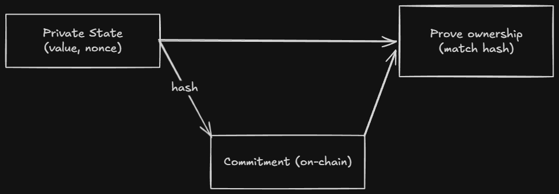
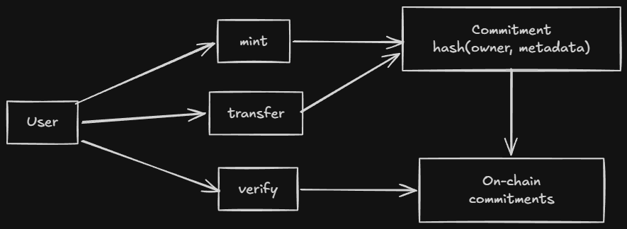

Compact Book
The resource smart developers recommend when someone asks how to learn Compact properly.
A structured, example-driven guide for understanding Compact, the domain-specific language that compiles to zero-knowledge circuits on the Midnight blockchain. Built for developers who learn through code, mental models, and working examples, not documentation dumps.
Inspired by the Rust-Notes repo by Tushar Pamnani.
What is Midnight?
Midnight is a data-protection blockchain with two parallel worlds:
| World | Where | Who sees it | Contains |
|---|---|---|---|
| Public | On-chain | Everyone | Proofs, contract code, public data |
| Private | Local storage | Only the owner | Sensitive data, secrets |
The bridge between them is zero-knowledge cryptography. Computations happen locally on private data; only a proof of correct execution goes on-chain. Validators verify the proof without ever seeing the inputs.
This is the key insight: Midnight doesn’t hide computation. It proves computation happened correctly without revealing what you computed on.
What is Compact?
Compact is Midnight’s smart contract language. It looks like TypeScript, but every program compiles to a finite zero-knowledge circuit.
You write Compact (TypeScript-like)
↓
Compiler produces ZK circuits + TypeScript bindings
↓
Your DApp calls circuits → generates proof → submits to chain
The compiler handles all the cryptographic machinery. You write business logic.
Who is this for?
| Background | Why this works for you |
|---|---|
| TypeScript developer | Syntax is familiar. Mental models are different, but you already understand types and functions. |
| Solidity developer | You understand state and contracts. The privacy model is the new layer. |
| Rust developer | You’re comfortable with strong types, ownership, and bounded computation. Compact will feel natural. |
| ZK newcomer | You don’t need to understand circuits. You write code that compiles to them. |
You should be comfortable with at least one typed language before starting. Compact builds on that.
Learning Path
Start at the top. Each note assumes you understood the previous one.
| # | Topic | What you learn | Level |
|---|---|---|---|
| 00 | What is Compact | What Compact is, what it compiles to, why boundedness matters | 🟢 Beginner |
| 01 | Why Compact | Why this design exists, what problems it solves | 🟢 Beginner |
| 02 | Setting Up the Compiler | Install the toolchain, compile your first contract | 🟢 Beginner |
| 03 | Writing a Contract | The four pieces of every contract | 🟡 Intermediate |
| 04 | Ledger State | Public vs private state, the disclose() boundary | 🟡 Intermediate |
| 05 | Circuits | How circuits work, why they’re not functions | 🟡 Intermediate |
| 06 | Witnesses | How private inputs enter circuits without touching the chain | 🟡 Intermediate |
| 07 | Explicit Disclosure | The witness protection program, common mistakes | 🔴 Advanced |
| 08 | Data Types | The complete type system | 🟡 Intermediate |
| 09 | Ledger ADTs | Map, Set, MerkleTree, choosing the right state structure | 🔴 Advanced |
| 10 | Standard Library | Hashing, tokens, merkle trees | 🔴 Advanced |
| 11 | Modules and Imports | Organizing code across files | 🟡 Intermediate |
| 12 | Compact Grammar | Syntax rules, precedence, what the grammar enforces | 🟡 Intermediate |
| 13 | Keywords Reference | Every keyword, organized by purpose | 🟢 Beginner |
| 14 | Testing and Debugging | Error reading, version management, troubleshooting | 🟡 Intermediate |
| 15 | Security and Best Practices | Privacy patterns, commitment design, common leaks | 🔴 Advanced |
| 16 | Example Projects | Full working contracts with walkthroughs | 🟢 Beginner |
Reading order:
- 00 → 03 → 16, the core loop. Read these first.
- 04 → 07, the privacy model. Read before touching any private data.
- 12 → 13 → 14, the reference layer. Read when you need detail.
- 08 → 09 → 10 → 11, the type system and stdlib. Read as needed.
- 15, security. Read before deploying anything.
What Makes These Notes Different
Most documentation explains what. These notes explain why and what it actually means.
Every note follows this structure:
- Intuition First, The 30-second version before the details
- Mental Model, How to think about it (precise, not vague)
- Why It Exists, The problem it solves
- Core Example, One clean example, then extended
- Under the Hood, What actually happens during compilation
- Common Mistakes, What you WILL get wrong (and why)
- Comparison Layer, How it maps to Rust, Solidity, TypeScript
- Practical Usage, Where it appears in real contracts
- Quick Recap, Memory anchors
Cross-links connect concepts.
Three Core Mental Models
Before you write any code, understand these:
1. A circuit is a constraint system, not a function. It doesn’t “run” in the normal sense. It declares relationships between inputs and outputs that must hold. The proof proves those relationships held.
2. The ledger is public. Private data stays local.
export ledger fields are on-chain and readable by everyone. Private data lives in witnesses and never touches the chain, only a proof that you operated on it correctly.
3. disclose() is a compile-time annotation, not encryption.
It tells the compiler “I am intentionally making this public.” The compiler prevents accidental disclosure. There’s no runtime cost and no magic.
The Five Program Elements
Every Compact contract is built from these:
| Element | Keyword | Purpose |
|---|---|---|
| Public state | export ledger | On-chain, readable by all |
| Private inputs | witness | Callbacks the DApp provides |
| Logic | circuit | Compiles to ZK circuits |
| Initialization | constructor | Runs once on deploy |
| Organization | module / import | Namespace and file management |
Resources
- Midnight Developer Docs, Official reference
- Compact Language Reference, Spec details
- Official Examples, Working projects
- Midnight Discord, Community
Contributing
Found a misconception that should be addressed? A better analogy? A mistake?
Open an issue or PR. This repo improves through developer feedback.
What is Compact?
Compact is Midnight’s smart contract language, a TypeScript-like DSL that compiles to zero-knowledge circuits.
The key word is compiles. You’re not writing circuits directly. You’re writing TypeScript-looking code, and the compiler produces the cryptographic machinery. This is the core value proposition: you get ZK correctness guarantees without learning ZK circuit design.
Intuition First
Compact looks like TypeScript because it was designed that way. But it is emphatically not TypeScript running somewhere, it is a constrained language where every program maps to a finite, deterministic circuit.
The constraints exist for a reason. ZK proofs require finite computation. If Compact let you write unbounded loops or recursion, the compiler couldn’t produce a circuit. So instead of fighting these constraints, accept them as the mechanism that makes the magic work.
When you write a circuit in Compact, you’re describing constraints on inputs. When you call that circuit from your DApp, the proof system generates a zero-knowledge proof that the constraints were satisfied, without revealing the inputs. This is why Compact programs can operate on private data while producing public verifiability.
Mental Model
A Compact program is a constraint declaration, not a procedure.
In traditional programming, a function takes inputs and returns outputs by executing statements in sequence. In Compact, a circuit declares relationships between inputs and outputs that must hold true. The proof proves the relationships held, it doesn’t “execute” in the normal sense.
| Traditional code | Compact circuit |
|---|---|
| Execution happens | Constraints are declared |
| Inputs → statements → outputs | Inputs, outputs, and their relationships are asserted |
| Runs on a machine | Compiles to a circuit |
| Reveals everything | Proves correctness without revealing inputs |
The boundedness principle: Every type has a fixed size at compile time. Every loop has a known bound. Recursion is not allowed. This isn’t a limitation, it’s the mechanism that makes compilation to circuits possible.
Where Compact Fits in the Midnight Stack
A Midnight smart contract has three parts:
- Public ledger component, Replicated on-chain state, visible to all (proofs, contract code, public data)
- Zero-knowledge circuit component, Proves correct execution without revealing private inputs
- Off-chain component, Arbitrary TypeScript code that drives the contract (wallet integration, proof generation)
Compact handles parts 1 and 2. You write Compact; the compiler generates the ZK circuits and TypeScript bindings. Your DApp uses the bindings to call circuits and submit proofs.
The Two-World Model
Privacy is the default. Private data stays local. Only the proof goes on-chain.
What Compact Looks Like
Compact’s syntax is deliberately close to TypeScript:
pragma language_version 0.22;
import CompactStandardLibrary;
enum State { UNSET, SET }
export ledger value: Uint<64>;
export ledger state: State;
export circuit get(): Uint<64> {
assert(state == State.SET, "Value not set");
return value;
}
If you’ve written TypeScript, this looks familiar. The differences are what make it ZK-suitable:
- No
anytype. Every expression has a known type at compile time. - Numeric types are unsigned only. Either bounded (
Uint<0..n>) or sized (Uint<n>) orField. - No recursion. Circuits cannot call themselves.
- Bounded loops only. Loop bounds must be compile-time constants.
- Privacy boundaries are enforced. Witness data must be explicitly disclosed before flowing into public state.
Why These Constraints Exist
Compact is intentionally not Turing-complete. This is not a weakness, it is the design:
| Constraint | Why it exists |
|---|---|
| No recursion | Circuit depth must be finite |
| Bounded loops only | The circuit size is determined at compile time |
| Fixed type sizes | Memory layout in circuits is fixed |
No any | The compiler must track data flow to enforce privacy |
| Unsigned only | Field arithmetic is cleaner; sign is handled differently |
ZK proofs require finite circuits. Compact enforces finiteness at the language level, so compilation always succeeds for type-correct programs.
What the Compiler Produces
When you compile a contract, the output maps to the visual above:
| Output directory | What it is |
|---|---|
contract/index.js | TypeScript runtime, your DApp calls this |
contract/index.d.ts | Type type definitions |
compiler/contract-info.json | Metadata (circuit list, witness list) |
zkir/*.zkir | ZK intermediate representation, the circuit definition |
keys/*.prover | Proving key, generates proofs |
keys/*.verifier | Verification key, validates proofs |
The Compiled JavaScript
The index.js is a runtime class with methods for each exported circuit:
import { Contract, ledger } from './contract';
const witnesses = { callerAddress };
const contract = new Contract(witnesses);
const result = await contract.circuits.mint(context, metadataHash);
const state = ledger(chargedState);
console.log(state.totalSupply);
TypeScript Definitions
The .d.ts exports typed interfaces:
export type Witnesses<PS> = {
callerAddress(context: WitnessContext): [PS, Uint8Array];
}
export type ImpureCircuits<PS> = {
mint(context: CircuitContext, metadataHash: Uint8Array): CircuitResults<PS, []>;
transfer(
context: CircuitContext,
tokenId: bigint,
newOwner: Uint8Array,
tokenMetaHash: Uint8Array
): CircuitResults<PS, []>;
}
export type Ledger = {
readonly totalSupply: bigint;
readonly nextTokenId: bigint;
tokenCommitments: {
isEmpty(): boolean;
size(): bigint;
member(key: bigint): boolean;
lookup(key: bigint): Uint8Array;
};
}
export class Contract {
witnesses: Witnesses;
circuits: Circuits;
impureCircuits: ImpureCircuits;
constructor(witnesses: Witnesses);
initialState(context: ConstructorContext): ConstructorResult;
}
The ZKIR (Zero-Knowledge Intermediate Representation)
The .zkir files are the circuit definitions the ZK proof system consumes. You won’t read these normally, but they’re the output that matters:
{
"version": { "major": 2, "minor": 0 },
"do_communications_commitment": true,
"num_inputs": 2,
"instructions": [
{ "op": "constrain_bits", "var": 0, "bits": 8 },
{ "op": "private_input", "guard": null },
{ "op": "persistent_hash", ... },
{ "op": "add", "a": 20, "b": 2 }
]
}
The Five Program Elements
| Element | Keyword | Purpose |
|---|---|---|
| Public state | export ledger | Declares on-chain, publicly readable state |
| Private inputs | witness | Declares callbacks for private data (body in TypeScript) |
| Logic | circuit | Functions that compile to ZK circuits |
| Initialization | constructor | Runs once on contract deployment |
| Organization | module / import / type | Namespace and type management |
Quick Recap
- Compact is TypeScript-like code that compiles to zero-knowledge circuits.
- Every program must be finite, no recursion, bounded loops only, fixed type sizes.
- A circuit declares constraints, not procedures. The proof proves the constraints held.
- The compiler produces TypeScript bindings (your DApp uses these) and ZKIR (the proof system uses this).
- Privacy is the default: private data stays local; only the proof goes on-chain.
export ledgeris public.witnessdata is private.disclose()is the boundary.assertis your only runtime guard, use it to validate witness outputs.
Common Mistakes
-
Thinking circuits are like functions. Circuits declare constraints, not steps. The proof proves the constraints held, it doesn’t “execute” in sequence.
-
Assuming unbounded loops work. Loop bounds must be compile-time constants.
for (let i = 0; i < n; i++)fails ifnisn’t known at compile time. -
Treating Compact as TypeScript. No
any, no dynamic typing, no recursion. The type system is strict by design. -
Forgetting the privacy boundary. Private data (witnesses) cannot flow into public state without
disclose(). The compiler catches this, but understanding why is important. -
Thinking
disclose()encrypts. It doesn’t. It’s a compile-time annotation that marks intentional disclosure. There’s no runtime cost and no cryptographic transformation.
Comparison Layer
| Concept | TypeScript | Solidity | Rust | Compact |
|---|---|---|---|---|
| Private data | private keyword (convention) | Private variables (still on-chain) | Ownership model | Witnesses stay local |
| Public data | Database or API | Storage variables | pub fields | export ledger |
| Functions | Regular functions | public/external | pub fn | export circuit |
| Type safety | Optional (TypeScript) or dynamic (JS) | Loosely typed | Strong | Strong, enforced |
| Loops | Unbounded | Unbounded (gas-limited) | Unbounded | Bounded only |
| Recursion | Allowed | Allowed (stack limits) | Allowed | Not allowed |
Cross-Links
- Next: Why Compact, Design goals and tradeoffs
- See also: Circuits, How circuits actually work under the hood
- See also: Witnesses, How private data enters circuits
Why Compact?
This note explains why Compact exists, the problem it solves, why traditional approaches fail, and what design choices make it different.
Intuition First
Before Compact, writing privacy-preserving smart contracts required either:
- Writing raw ZK circuits, Cryptographically correct but inaccessible to most developers.
- Using traditional smart contracts, Accessible but with no privacy at all.
Compact sits between these extremes. It makes privacy-preserving computation accessible to TypeScript developers by handling the circuit generation automatically. You write code that looks familiar; the compiler produces the cryptographic machinery.
The tradeoff is bounded computation. Compact intentionally cannot express Turing-complete programs. In exchange, every valid program compiles to a circuit.
The Three Approaches
| Approach | Privacy | Accessibility | Complexity |
|---|---|---|---|
| Raw ZK circuits | Full | Requires cryptographic expertise | Extremely high |
| Traditional smart contracts (Solidity) | None | Accessible to developers | Low |
| Compact | Full | TypeScript-like syntax | Medium |
Compact doesn’t add privacy to existing contracts. It builds privacy into the model from the start, at the language level.
The Privacy Model
Traditional smart contracts have one world: public state that everyone can see. Midnight has two.
| World | Location | Visibility | Contents |
|---|---|---|---|
| Public | On-chain | Everyone | Proofs, contract code, public data |
| Private | Local storage | Only the owner | Sensitive data, secrets |
Computations happen locally on private data. A ZK proof of correctness is submitted on-chain. Validators verify the proof without seeing the inputs.
The key insight: Privacy doesn’t mean “hiding everything.” It means proving you have the right to do something without revealing what that something is. A ZK proof says: “I ran this computation correctly” without revealing the inputs to that computation.
Why Not Just Use Traditional Contracts?
Traditional contracts make everything public by default. This is fine for many use cases, but breaks down when:
- Regulated data, Healthcare (HIPAA), finance (SOX), identity (KYC). Public exposure isn’t optional.
- Competitive data, Bid amounts, inventory levels, proprietary information.
- Personal data, Balances, transaction history, credit scores.
You could encrypt data on-chain, but then no one can verify computation on it. Traditional ZK approach is to write circuits from scratch, extremely difficult to get right and audit.
Compact makes the ZK approach accessible.
Type Safety at the Language Level
| Language | Type Safety | What it means |
|---|---|---|
| JavaScript | None | Any value, any type, runtime errors |
| Solidity | Loosely typed | Implicit conversions, overflow allowed |
| TypeScript | Optional | Opt-in with tsconfig, can be bypassed |
| Compact | Strong, enforced | Compiler rejects any program that doesn’t type-check |
Strong type safety matters in Compact because the type system tracks data flow for privacy enforcement. If types were loose, the compiler couldn’t track where private data travels.
Verifiability vs. Privacy
| You want | Traditional contracts | Raw ZK circuits | Compact | |———|—————––|—————–|—————|––––| | Everything verifiable | Yes | Yes | Yes | | Full privacy | No | Yes | Yes | | Accessible syntax | Yes | No | Yes |
Compact gives you both verifiability and privacy without requiring cryptographic expertise. You don’t write a single circuit by hand.
Selective Disclosure
Compact supports selective disclosure, users choose exactly what to reveal and to whom. This enables regulated use cases:
- Healthcare: Prove you meet age requirements without revealing your birthday.
- Finance: Prove your balance exceeds a threshold without revealing the balance.
- Identity: Prove citizenship without revealing your nationality or full address.
This isn’t a feature bolted on. It’s baked into the model via disclose(), a compile-time boundary that marks intentional disclosure.
When to Choose Compact
Use Compact when you need:
- Privacy-preserving logic on a public blockchain
- To prove correctness without revealing inputs
- TypeScript-like development without learning ZK circuit design
- Selective disclosure for regulated data
When Not to Choose Compact
Compact is not the right tool when:
| Scenario | Why not Compact | Alternative |
|---|---|---|
| No privacy requirements | Traditional contracts are simpler | Solidity |
| Turing-complete computation needed | Compact is intentionally bounded | Raw circuits |
| Dynamically-sized data structures | All sizes must be compile-time constants | Design around bounded structures |
| Complex cryptography needed | Compact generates standard circuits | Write custom circuits |
The Core Tradeoff
Compact trades:
| What you give up | What you get |
|---|---|
| Turing-completeness | Automatic ZK circuit compilation |
| Dynamic typing | Strong type safety enforced at compile time |
| Implicit privacy | Privacy model that works at the language level |
This tradeoff is explicit and intentional. If you need full Turing-completeness, you don’t need Compact. But if you need privacy-preserving smart contracts and don’t want to write circuits by hand, Compact is purpose-built for exactly this.
Comparison Layer
| Feature | Solidity | Raw ZK (Circom) | Compact |
|---|---|---|---|
| Language | Solidity | Circom/DSL | TypeScript-like |
| Privacy model | None | Full | Full |
| Type safety | Loose | Manual | Enforced |
| Learning curve | Low | Very high | Medium |
| Compilation | EVM bytecode | Circuit | ZK circuits + TS |
| State model | On-chain only | Custom | Public + private |
Quick Recap
- Compact bridges the gap between inaccessible raw ZK and privacy-free traditional contracts.
- Midnight has two worlds: public (on-chain) and private (local). Only the proof goes on-chain.
- Selective disclosure lets users reveal exactly what they choose, to whom they choose.
- Compact trades Turing-completeness for automatic ZK circuit generation and strong type safety.
- If you don’t need privacy, traditional contracts are simpler. If you need full control, raw circuits exist.
- The type system is strict by design, it tracks data flow for privacy enforcement.
Cross-Links
- Next: Setting Up the Compiler, Install the toolchain
- See also: Ledger State, How the two-world model works
- See also: Explicit Disclosure, How selective disclosure works
Setting Up the Compiler
This note walks through installing the Compact toolchain and getting your first contract compiled.
Goal after this note: Have
compactinstalled and able to compile a basic contract.
Intuition First
Compact has two tools:
compact, The CLI you use day-to-day (compile, format, fixup).compactc, The actual compiler. You invoke it viacompact compile.
The toolchain has one non-obvious dependency: Docker. The proof server generates ZK proofs locally and requires Docker Desktop running. This is the step most people skip.
The Three Components
| Component | What it is | Runs where |
|---|---|---|
compact CLI | Your interface to the toolchain | Your terminal |
compact compile | The actual compiler | Invoked by compact |
| Proof server (Docker) | Generates ZK proofs locally | Docker Desktop |
You interact with the CLI. The CLI invokes the compiler. The proof server generates proofs when you call circuits.
Prerequisites
Before installing Compact, ensure you have:
- Docker Desktop, Required for the proof server
- Chrome browser, For the Lace Wallet extension
- Visual Studio Code, For the syntax extension
- Lace Wallet (Chrome extension), For wallet integration during development
Note: Linux and macOS are directly supported. On Windows, use WSL.
Step 1: Install the compact CLI
curl --proto '=https' --tlsv1.2 -LsSf https://github.com/midnightntwrk/compact/releases/latest/download/compact-installer.sh | sh
Add the binary to your PATH:
export PATH="$HOME/.compact/bin:$PATH"
Where it installs: The installer places compact at $HOME/.compact/bin/compact. Add this directory to your PATH permanently (in .bashrc or equivalent).
Verify:
compact --version
Step 2: Install the Compiler
compact update
This downloads and installs the current compiler version.
Verify both:
compact --version
compact compile --version
Step 3: Start the Proof Server
The proof server generates ZK proofs locally. It requires Docker Desktop running.
docker run -p 6300:6300 midnightntwrk/proof-server:8.0.3 midnight-proof-server -v
What this does:
- Starts the proof server container on port 6300
- The server listens at
http://localhost:6300
Configure Lace Wallet to use it:
- Open Lace Wallet
- Go to Settings → Midnight
- Select Local (http://localhost:6300)
Tip: Keep Docker Desktop running whenever you’re developing. The proof server must be up when you call circuits.
Step 4: Install the VS Code Extension
- Download the VSIX package:
https://raw.githubusercontent.com/midnight-ntwrk/releases/gh-pages/artifacts/vscode-extension/compact-0.2.13/compact-0.2.13.vsix - In VS Code: Extensions → Install from VSIX → select the downloaded file
This adds syntax highlighting for .compact files.
Compiling a Contract
With everything installed, compile your first contract:
compact compile contracts/counter.compact contracts/managed/counter
Output directory:
contracts/managed/counter/
├── contract/ # TypeScript runtime
│ ├── index.js
│ ├── index.d.ts
│ └── index.js.map
├── compiler/ # Metadata
│ └── contract-info.json
├── zkir/ # ZK circuits
│ ├── *.zkir
│ └── *.bzkir
└── keys/ # Proving keys
├── *.prover
└── *.verifier
Development shortcut: Skip ZK key generation during development, it’s slow:
compact compile --skip-zk contracts/counter.compact contracts/managed/counter
Re-enable for production builds.
Other Commands
compact format src/ # format all .compact files
compact format --check src/ # check formatting (CI)
compact fixup src/ # apply source-level fixups
compact list --installed # list installed versions
Troubleshooting
| Error | Fix |
|---|---|
compact: command not found | Add $HOME/.compact/bin to PATH |
| Docker connection errors | Ensure Docker Desktop is running |
| Port 6300 in use | Use a different port: -p 6301:6300 |
compact update fails | Check your internet connection; try again |
Standard Library
The standard library is built into the compiler, it’s not a file on disk. Import it at the top of every contract:
import CompactStandardLibrary;
This gives you Maybe, Either, hashing functions, token operations, and more.
Quick Recap
compactis the CLI.compact compileinvokes the compiler.- Install via the shell script. Add
$HOME/.compact/binto your PATH. - Docker Desktop must be running for the proof server.
- Start the proof server:
docker run -p 6300:6300 midnightntwrk/proof-server:8.0.3 midnight-proof-server -v - Use
--skip-zkduring development to skip slow key generation. - Import
CompactStandardLibraryat the top of every contract.
Cross-Links
- Previous: Why Compact, Design goals
- Next: Writing a Contract, Write your first contract
- See also: Official Installation Docs
Writing a Contract
This note covers the structure of a Compact contract, the four mandatory pieces and how they fit together.
Intuition First
Every Compact contract has four mandatory pieces:
pragma, Declares the language version.export ledger, Public state that lives on-chain.witness, Declares where private data comes from (body is in TypeScript).export circuit, Logic that compiles to ZK circuits.
The optional fifth piece is the constructor, runs once on deployment to initialize state.
Think of it this way:
export ledger= what everyone can readwitness= where your secrets come fromexport circuit= what you can prove happenedconstructor= how it starts
Minimal Contract
pragma language_version >= 0.22;
export ledger message: Opaque<"string">;
export circuit post(msg: Opaque<"string">): [] {
message = disclose(msg);
}
This is a bulletin board: anyone can post a message that becomes public. No privacy, just the simplest possible contract.
Full Contract: Bulletin Board
A contract where one person posts a message, then takes it down. Ownership is verified via a derived public key.
pragma language_version >= 0.20;
import CompactStandardLibrary;
export enum State { VACANT, OCCUPIED }
export ledger state: State;
export ledger message: Maybe<Opaque<"string">>;
export ledger sequence: Counter;
export ledger owner: Bytes<32>;
constructor() {
state = State.VACANT;
message = none<Opaque<"string">>();
sequence.increment(1);
}
witness localSecretKey(): Bytes<32>;
export circuit post(newMessage: Opaque<"string">): [] {
assert(state == State.VACANT, "Board occupied");
owner = disclose(publicKey(localSecretKey(), sequence as Field as Bytes<32>));
message = disclose(some<Opaque<"string">>(newMessage));
state = State.OCCUPIED;
}
export circuit takeDown(): Opaque<"string"> {
assert(state == State.OCCUPIED, "Board empty");
assert(owner == publicKey(localSecretKey(), sequence as Field as Bytes<32>), "Not owner");
const msg = message.value;
state = State.VACANT;
sequence.increment(1);
message = none<Opaque<"string">>();
return msg;
}
pure circuit publicKey(sk: Bytes<32>, seq: Bytes<32>): Bytes<32> {
return persistentHash<Vector<3, Bytes<32>>>([pad(32, "bboard:pk:"), seq, sk]);
}
Walk through what happens:
- Deployment:
constructor()runs once. State is VACANT, message is none. - Post: Caller’s derived public key is stored as
owner. The message is disclosed and stored. - TakeDown: Verifies the caller knows the secret key that derives the stored public key. Returns the message.
The key pattern here: the secret key never leaves the caller’s machine. The public key is derived and stored. When takeDown runs, it verifies ownership by checking if publicKey(callerSecret, sequence) == owner. The ZK proof proves the caller knew the secret without revealing it.
The Four Pieces
Pragma & Import
pragma language_version >= 0.22;
import CompactStandardLibrary;
The pragma declares minimum language version. The import brings in the standard library.
Ledger (Public State)
export ledger message: Opaque<"string">;
export ledger counter: Uint<64>;
export ledger state: State;
export= readable from TypeScript (your DApp can see it)ledger= on-chain, public state- Default initialization: zero or empty. Override in
constructor.
Types: Uint<64>, Bytes<32>, Opaque<"string">, State, Counter, Map<K, V>, Set<T>, MerkleTree<n, T>, and more.
Circuits (Logic)
export circuit get(): Opaque<"string"> {
return message;
}
export circuit post(msg: Opaque<"string">): [] {
message = disclose(msg);
}
export= callable from your DApp[]= no return value (procedure-style)assert(condition, "message")= runtime guard
Circuits are the logic layer. They compile to ZK circuits.
Witnesses (Private Input)
witness secretKey(): Bytes<32>;
Declares a callback. The body is provided by your TypeScript DApp, not in Compact.
Constructor (Initialization)
constructor(initial: Uint<64>) {
value = disclose(initial);
}
Runs once on deployment. Use disclose() for values that should be public from the start.
What Happens Under the Hood
When you compile:
Your .compact file
↓
Compiler parses → type checks → generates ZKIR
↓
ZKIR + proving keys → ZK proof (at runtime)
↓
Proof submitted → validated → state updated
Your DApp calls contract.circuits.post(context, msg). Behind the scenes:
- Your DApp invokes the circuit with the message.
- The witness function (
localSecretKey) is called, returns the private key. - The proof server generates a ZK proof of correct execution.
- The proof is submitted to the chain.
- Validators verify the proof, they never see the secret key.
Common Mistakes
-
Forgetting
disclose()on ledger writes. If you’re writing a witness-derived value to the ledger, you needdisclose(). The compiler catches this, but understanding why matters. -
Not using
asserton witness outputs. Witnesses are untrusted. Always validate their outputs:assert(balance > amount, "Insufficient balance"). -
Writing logic in the constructor. The constructor runs once and is done. If you need ongoing logic, use circuits.
-
Returning witness data directly. Returning a witness value from an exported circuit is a disclosure. Wrap it in
disclose()or don’t return it. -
Using
exporteverywhere.exportmakes fields and circuits callable from outside. Internal helpers should not be exported.
Comparison Layer
| Concept | Solidity | TypeScript | Compact |
|---|---|---|---|
| State | uint256 publicVar | class fields | export ledger f: T |
| Functions | function name() external | method() | export circuit name(): T |
| Constructor | constructor() { } | constructor() | constructor(params) { } |
| Private data | private (convention) | private fields | witness (stays local) |
| Initialization | in constructor | in constructor | constructor + disclose() |
Quick Recap
- Every contract has:
pragma,export ledger,witness,export circuit. - Optional:
constructorfor initialization. export ledger= public on-chain state.witness= private input (body in TypeScript).export circuit= logic that compiles to ZK circuits.assert()= runtime guard. Always validate witness outputs.disclose()= marks intentional disclosure to the public world.
Cross-Links
- Previous: Setting Up the Compiler, Toolchain setup
- Next: Ledger State, Public vs private state model
- See also: Circuits, How circuits work
- See also: Witnesses, Private input mechanism
Ledger State
This note explains the ledger Midnight’s public state layer and how it relates to private state.
Docs: Ledger ADT · Ledger State Examples: 04.01 Commitment Pattern
Intuition First
The ledger is Midnight’s public world. Every node on the network stores it. Everyone can read it.
Private data (witnesses) lives on the user’s local machine and never touches the chain. The two are connected by disclose(), a compile-time annotation that marks intentional disclosure.
The key insight: privacy is the default, not opt-in. Private data stays private unless you explicitly mark it for disclosure.
The Two Worlds
| Property | export ledger | Private state (witnesses) |
|---|---|---|
| Where it lives | Every network node | User’s local storage |
| Who can read it | Everyone | Only the owner |
| On-chain representation | Plaintext value | Nothing (commitment or nothing) |
| How it’s updated | Via ZK proof | Never touches the chain |
| Update mechanism | Ledger assignment | Witness callbacks |
Ledger State Updates
The ledger update happens atomically with the proof. Either the proof is valid and the state changes, or it isn’t and nothing changes.
Declaring Ledger Fields
ledger val: Field; // basic field
export ledger cnt: Counter; // exported, readable
sealed ledger config: Uint<32>; // write-once
export sealed ledger mapping: Map<Boolean, Field>; // exported + sealed
| Modifier | Meaning |
|---|---|
export | Readable from TypeScript (your DApp) |
sealed | Writeable only during initialization |
ledgerwithout modifiers = basic, non-exported fieldexport ledger= readable by your DAppsealed ledger= writeable during initialization onlyexport sealed ledger= both
All ledger fields initialize to their type’s default (zero, empty, first variant, etc.). The constructor can override them.
The disclose() Boundary
disclose() is a compile-time annotation, not encryption. It tells the compiler: “I am intentionally disclosing witness data.”
// Without disclose(): compiler error
export circuit record(): [] {
stored = getSecret(); // error: potential witness disclosure
}
// With disclose(): compiles
export circuit record(): [] {
stored = disclose(getSecret()); // ok: declared
}
The compiler tracks witness data through every operation, arithmetic, type conversions, function calls. If witness data could reach the ledger without disclose(), you get a compiler error.
What this means: You cannot accidentally leak private data. The compiler enforces the privacy boundary.
When to Use export ledger
Good candidates for export ledger:
| Candidate | Why it belongs on-chain |
|---|---|
| Global invariants (total supply, reserve balance) | Everyone needs to see them |
| State flags others react to | Needed for coordination |
| Commitments to private values (the hash, not the value) | Proves existence without revealing |
| Data your frontend needs to read directly | Otherwise you can’t display it |
Bad candidates:
| Candidate | Why it doesn’t belong on-chain |
|---|---|
| Per-user balances | Only one user cares |
| Personal data | Privacy violation |
| Any value belonging to only one user | No one else needs it |
Heuristic: If removing this field would break another user’s ability to interact with the contract, it belongs in export ledger.
The Commitment Pattern

If export ledger puts values on-chain as plaintext, and private state keeps values off-chain entirely, how do you verify something about private state?
Answer: commitments. Store the hash on-chain. Keep the value off-chain. Prove knowledge of the value without revealing it.
export ledger balanceCommitments: Map<Bytes<32>, Bytes<32>>;
export circuit commitBalance(value: Uint<64>): [] {
const nonce = freshNonce();
const commitment = persistentCommit<Uint<64>>(value, nonce);
balanceCommitments.insert(disclose(callerAddress()), disclose(commitment));
}
Critical: The nonce must never be reused. Two commitments with the same nonce and value are identical on-chain.
Commitment Tools
| Function | Output | Persists? | For ledger? | Witness-tainted? |
|–––––|––––|———–|————|——————|—————–|
| transientHash | Field | No | No | Yes |
| transientCommit | Field | No | No | No |
| persistentHash | Bytes<32> | Yes | Yes | Yes |
| persistentCommit | Bytes<32> | Yes | Yes | No |
- Persistent: Survives contract upgrades. Use for long-term storage.
- Transient: Does not survive upgrades. Use for temporary computations.
- Commit (vs hash): Includes a random nonce. The nonce hides the input even if the value is known. Use when the value might be guessable.
Ledger-State Types
| Type | What it is |
|---|---|
T (any type) | A single Cell<T>, readable and writable |
Counter | Unsigned counter with atomic increment (low contention) |
Set<T> | Unbounded set of unique values |
Map<K, V> | Unbounded key-value mapping |
List<T> | Unbounded ordered list (pushFront/popFront) |
MerkleTree<n, T> | Bounded Merkle tree of depth n (2 ≤ n ≤ 32) |
HistoricMerkleTree<n, T> | Like MerkleTree but retains past roots |
Kernel | Built-in operations (block time, tokens, address) |
Choosing the Right Type
| Use case | ADT |
|---|---|
| Single mutable value | ledger f: T (Cell) |
| Monotonically growing counter (low contention) | Counter |
| Membership tracking | Set<T> |
| Per-key storage | Map<K, V> |
| Ordered queue | List<T> |
| ZK membership proofs (current root only) | MerkleTree<n, T> |
| ZK membership proofs (any past root) | HistoricMerkleTree<n, T> |
| Block time, tokens, contract address | Kernel |
Common Mistakes
-
Treating
export ledgeras encrypted. It isn’t. Everything inexport ledgeris plaintext and readable by everyone. If you need privacy, use the commitment pattern. -
Forgetting that witnesses never touch the chain. Witness data stays local. Only the proof goes on-chain. You cannot store witness data directly, you must
disclose()it first. -
Reusing nonces. Two commitments with the same nonce and value are identical on-chain. Always use a fresh nonce.
-
Putting per-user data in the ledger. If only one user cares about a value, it shouldn’t be in the ledger. It’s a privacy leak.
-
Using
transientHashfor ledger storage. Transient values don’t survive contract upgrades. UsepersistentHashorpersistentCommit.
Comparison Layer
| Concept | Solidity | Rust | Compact |
|---|---|---|---|
| Public state | uint256 publicVar | storage fields | export ledger f: T |
| Private state | private uint256 (still on chain) | u64 in memory | witness (stays local) |
| State updates | direct assignment | storage.write() | via ZK proof |
| Reading state | Contract.state() | direct read | ledger(state) |
Quick Recap
- The ledger is public on-chain state. Everyone can read it.
- Private data (witnesses) stays local. Only the proof goes on-chain.
disclose()marks intentional disclosure. It’s a compile-time annotation, not encryption.- Store commitments on-chain. Keep values off-chain. Prove knowledge without revealing.
- Always use a fresh nonce for commitments. Reuse = privacy leak.
transient*doesn’t survive upgrades.persistent*does.transientCommitcan commit private values withoutdisclose(). The random nonce provides sufficient hiding.
Cross-Links
- Previous: Writing a Contract Contract structure
- Next: Circuits How circuits work
- See also: Explicit Disclosure The disclose() boundary in depth
- See also: Ledger ADTs Map, Set, MerkleTree details
- Examples: 04.01 Commitment Pattern
Circuits
This note explains circuits, the operational unit of Compact, and why they’re fundamentally different from regular functions.
Docs: Circuit Definitions Examples: 05.01 Basic Circuits · 05.02 Generics · 05.03 Control Flow
Intuition First
A circuit is not a function. A function takes inputs, executes statements in sequence, and returns an output. A circuit declares constraints on inputs that must hold true.
This distinction matters. When you write return a + b, you’re not “computing” a + b, you’re asserting that the output equals a + b. The proof proves this relationship held for the given inputs.
Circuits are the language of constraints. Functions are the language of computation. Compact uses constraints because that’s what ZK proofs verify.
Mental Model
A circuit is a constraint system, not a procedure.
| Functions | Circuits |
|---|---|
| Execute statements in sequence | Declare relationships between inputs/outputs |
| Return values | Assert equalities between expressions |
| Can have side effects | No side effects (pure circuits) |
| Run at runtime | Compile to gates and constraints |
| Reveal inputs/outputs | Proves constraints satisfied without revealing inputs |
When you call a circuit from your DApp, you’re not “running” it in the traditional sense. You’re generating a proof that the declared constraints held for the actual inputs.
Syntax
export pure circuit name<GenericParams>(param: Type, ...): ReturnType {
// body
}
| Part | Meaning |
|---|---|
export | Callable from TypeScript (your DApp) |
pure | Optional. Asserts no side effects (ledger reads/writes, witness calls) |
circuit | The keyword, this is a constraint declaration |
GenericParams | Optional type parameters |
param: Type | Each parameter must have an explicit type |
ReturnType | Must be explicitly declared |
Simple Examples
circuit add(a: Uint<64>, b: Uint<64>): Uint<64> {
return a + b;
}
export circuit get(): Uint<64> {
assert(state == State.SET, "Value is not set");
return value;
}
The assert statement is itself a constraint. The circuit fails if the condition is false, the proof won’t verify.
Pure vs Impure
A circuit is pure if it computes outputs from inputs only, no ledger reads, no ledger writes, no witness calls.
pure circuit hashPair(a: Field, b: Field): Field {
return transientHash<[Field, Field]>([a, b]);
}
If you mark a circuit pure but it accidentally calls a witness, the compiler catches it. Pure circuits appear in the PureCircuits TypeScript type, they’re the circuits that don’t need state access.
Why mark pure? It documents intent and lets the compiler verify it. If you’re using a circuit in a context where ledger state shouldn’t change (like computing a hash for a commitment), pure ensures you didn’t accidentally depend on ledger state.
Parameters and Destructuring
circuit double(x: Field): Field { return x + x; }
// tuple destructuring
circuit sumPair([a, b]: [Field, Field]): Field { return a + b; }
// struct destructuring
struct Point { x: Uint<32>, y: Uint<32> }
circuit sumPoint({x, y}: Point): Uint<64> { return x + y; }
// rename a field
circuit useX({x: val}: Point): Uint<32> { return val; }
Destructuring works at the parameter level. This is syntactic sugar, it’s the same as:
circuit sumPoint(p: Point): Uint<64> { return p.x + p.y; }
Return Types
Use [] for circuits that return nothing (they only update state):
export circuit clear(): [] {
state = State.UNSET;
}
[] means “no return value.” The circuit still produces a proof, it proves the state was updated correctly.
Local Bindings
circuit compute(x: Field): Field {
const doubled = x + x;
const result = doubled * 3;
return result;
}
const [a, b] = pair;
const {x, y} = point;
Variables are immutable after binding. const x = ...; x = ...; is invalid. This isn’t a style choice, it’s enforced because circuits declare constraints, and reassignment would be ambiguous in a constraint system.
Control Flow
assert(state == State.SET, "Value is not initialized");
if (condition) {
// then
} else {
// else
}
if/else works, but there’s no early return from within a for body. This is because circuits need to declare all constraints, a return inside a loop would make the constraint structure conditional in a way the compiler can’t handle.
For Loops
Both forms are bounded at compile time:
// iterate over vector
for (const x of v) { }
// iterate over numeric range (0..N excludes N)
for (const i of 0..10) { }
return cannot be used inside a for body. Use map and fold for accumulation.
map and fold
For transformation and accumulation without return:
circuit doubleAll(v: Vector<4, Field>): Vector<4, Field> {
return map((x) => x + x, v);
}
circuit sumAll(v: Vector<4, Field>): Field {
return fold((acc, x) => acc + x, 0, v);
}
map applies a function to each element. fold accumulates across elements. These are idiomatic in Compact because for loops can’t use return.
Generic Circuits
circuit identity<T>(x: T): T { return x; }
circuit firstOf<#N, T>(v: Vector<N, T>): T { return v[0]; }
Generic circuits must be specialized at the call site:
const x = identity<Field>(42);
const head = firstOf<4, Field>([1, 2, 3, 4]);
Generic circuits cannot be exported from the top level, they must be specialized before export.
What Actually Happens Under the Hood
When you compile a circuit:
Compact code
↓
Compiler generates constraint system (ZKIR)
↓
Constraint system → arithmetic circuit (gates + wires)
↓
At runtime: inputs + proof keys → ZK proof
↓
Proof submitted → verified → state updated
The circuit declares constraints. The proof system converts those constraints into an arithmetic circuit. The proof proves the arithmetic circuit was satisfied.
The key insight: The circuit doesn’t “execute” at verification time. The proof contains enough information for anyone to verify the constraints held without re-executing the computation.
Common Mistakes
-
Thinking circuits execute like functions. Circuits declare constraints. The proof proves the constraints were satisfied. “Running” a circuit means generating a proof.
-
Using
returninsideforloops. Not allowed. The circuit structure must be fully determined at compile time. Usemapandfoldinstead. -
Forgetting that variables are immutable.
const x = 1; x = 2;is invalid. Once bound, a value cannot change. Usefoldor multiple variables if you need accumulation. -
Marking impure circuits
pure. If a circuit reads the ledger or calls a witness, it’s impure. The compiler catches mismatches, but understanding why matters:pureis a promise about no side effects. -
Not using
asserton witness outputs. Witnesses are untrusted. The ZK proof proves the circuit’s logic ran correctly, it doesn’t prove the inputs were sensible. Always validate:assert(balance >= amount, "Insufficient").
Comparison Layer
| Concept | TypeScript functions | Rust | Solidity | Compact circuits |
|---|---|---|---|---|
| Parameters | typed | typed | typed | typed |
| Return | explicit | explicit | explicit | explicit |
| Side effects | allowed | ownership | storage | not in pure |
| Recursion | allowed | allowed | allowed | not allowed |
| Unbounded loops | allowed | allowed | gas-limited | not allowed |
| Immutability | const | let | implicit | const |
| Execution | at runtime | at runtime | at runtime | at compile (proves at runtime) |
Quick Recap
- A circuit is a constraint declaration, not a procedure.
return a + basserts output equals a + b. It doesn’t “compute” it in sequence.- Pure circuits have no side effects. Impure circuits read/write ledger state.
- Variables are immutable after binding. No reassignment.
- No
returninsideforloops. Usemapandfold. - Generic circuits must be specialized at the call site.
- The ZK proof proves constraints were satisfied, it doesn’t reveal inputs.
Cross-Links
- Previous: Ledger State Public state model
- Next: Witnesses How private inputs enter circuits
- See also: What is Compact Compilation overview
- See also: Explicit Disclosure Privacy boundary
- Examples: 05.01 Basic Circuits · 05.02 Generics · 05.03 Control Flow
Witnesses
This note explains witnesses, the mechanism that brings private data into circuits without ever touching the chain.
Docs: Declaring Witnesses Examples: 06.01 Witnesses
Intuition First
A witness is a callback function. You declare its type in Compact, but the body is provided by your TypeScript DApp at runtime. When a circuit calls a witness, it runs locally on the user’s device, the value it returns never goes on-chain. Instead, a ZK proof proves the circuit executed correctly given that value.
The name “witness” comes from ZK literature. In a proof, the witness is the secret data that proves a statement is true, without revealing what that data is. In Compact, witnesses are exactly that: secret inputs that prove the circuit ran correctly.
Mental Model
Witnesses are private inputs, not parameters.
| Parameters (to circuits) | Witnesses |
|---|---|
| Passed explicitly when calling | Provided by DApp at runtime |
| Visible in the proof inputs | Stay local, never on chain |
| Public (anyone can see them) | Private (only the caller knows) |
| Compiler enforces type | DApp provides implementation |
When you call a circuit, you pass public parameters. The circuit can also call witnesses internally. The witness returns a value, and the circuit uses it, but only the proof goes on-chain.
The Flow
Declaring a Witness
witness secretKey(): Bytes<32>;
witness getBalance(addr: Bytes<32>): Uint<64>;
witness userNonce(): Field;
witness getItem<T>(index: Uint<32>): T; // generic
Witness declarations have no body. The body is provided by your TypeScript DApp.
Calling a Witness
export circuit clear(): [] {
const sk = secretKey(); // call witness: returns private data
const pk = publicKey(round, sk); // compute with it: still private
assert(authority == pk, "Not authorized");
state = State.UNSET;
round.increment(1);
}
The witness call happens locally. The ZK proof proves the computation was correct, without revealing sk.
The Compiler Tracks Witness Data
The compiler tracks witness data through every operation, arithmetic, type conversions, struct construction, function calls. Once data comes from a witness, it’s “tainted”, the compiler knows it’s private.
export circuit example(): [] {
const s = getSecret();
const doubled = s + s; // still witness data
const converted = s as Uint<64>; // still witness data
ledger = doubled; // compiler error: undeclared disclosure
}
This is the witness protection program, the compiler prevents accidental disclosure of private data.
When Disclosure Is Required
When witness data needs to flow into the public ledger, wrap it in disclose():
// Without: compiler error
export circuit record(): [] {
balance = getBalance(); // error: witness data going to ledger
}
// With: compiles
export circuit record(): [] {
balance = disclose(getBalance()); // ok: declared
}
disclose() does not encrypt. It’s a compile-time annotation that says “I’m intentionally making this public.”
The Compiler Error
When you forget disclose(), the compiler tells you exactly where the witness data came from:
Exception: line 6 char 11:
potential witness-value disclosure must be declared but is not:
witness value potentially disclosed:
the return value of witness getBalance at line 2 char 1
nature of the disclosure:
ledger operation might disclose the witness value
This trace tells you:
- Where the witness data originated (
getBalance) - Where it tried to flow (the ledger assignment)
Indirect Disclosure
The compiler catches disclosure even when witness data travels through helper circuits:
circuit obfuscate(x: Field): Field {
return x + 73; // output is still witness data
}
export circuit record(): [] {
const s = getBalance() as Field;
const x = obfuscate(s);
balance = x as Bytes<32>; // compiler catches this
}
The compiler’s abstract interpreter follows witness taint through every operation. You cannot hide witness data by passing it through arithmetic, structs, or helper functions.
Place Disclosure As Close As Possible
// Bad: declares broader scope
export circuit process(data: PrivateData): [] {
const result = compute(disclose(data)); // discloses too much
ledger = result;
}
// Good: discloses at the boundary
export circuit process(data: PrivateData): [] {
const result = compute(data);
ledger = disclose(result); // discloses only what's needed
}
Place disclose() as close to the disclosure point as possible. This minimizes what you’re declaring as public.
Standard Library Exceptions
Some functions can handle witness data without explicit disclosure:
| Function | Witness-tainted? | Why |
|---|---|---|
transientCommit(e) | No | Random nonce provides sufficient hiding |
transientHash(e) | Yes | Bare hash may not hide input |
// no disclose() needed
ledger commitment: Field;
export circuit commit(v: Field): [] {
const nonce = freshNonce();
commitment = transientCommit(v, nonce); // nonce hides the value
}
The nonce provides enough randomness that even knowing the value doesn’t help. This is why transientCommit doesn’t require disclose(), but transientHash does.
Critical: Witness Results Are Untrusted
Do not assume in your contract that the code of any
witnessfunction is the code that you wrote. Any DApp may provide any implementation it wants. Results should be treated as untrusted input.
The ZK proof guarantees the circuit’s logic ran correctly, given whatever inputs witnesses returned. It does not guarantee witnesses returned sensible values.
Your contract must validate witness outputs:
// WRONG: trust the witness
export circuit transfer(to: Bytes<32>, amount: Uint<64>): [] {
const balance = getBalance(); // untrusted!
balances[to] += amount;
}
// RIGHT: validate first
export circuit transfer(to: Bytes<32>, amount: Uint<64>): [] {
const balance = getBalance();
assert(balance >= amount, "Insufficient balance"); // validate!
balances[to] += amount;
}
Comparison Layer
| Concept | Solidity | TypeScript | Compact |
|---|---|---|---|
| Private input | private variables | class fields | witness |
| Secret data | on-chain (encrypted) | in memory | stays local |
| Proving computation | N/A | N/A | via circuit |
| Trust model | contract code | app logic | witness is untrusted |
Quick Recap
- Witnesses are callback functions, declared in Compact, implemented in TypeScript.
- They run locally on the user’s device. The value never goes on-chain.
- Only the ZK proof goes on-chain, it proves the circuit ran correctly given the witness inputs.
- The compiler tracks witness data through every operation.
- If witness data reaches the ledger without
disclose(), the compiler errors. transientCommitis an exception, the random nonce provides hiding withoutdisclose().- Always validate witness outputs. The proof proves correct logic, not sensible inputs.
Cross-Links
- Previous: Circuits Constraint declarations
- Next: Explicit Disclosure Deep dive on disclose()
- See also: Ledger State Public vs private
- See also: Writing a Contract Full example
- Examples: 06.01 Witnesses
Explicit Disclosure
This note is the definitive guide to disclose(), what it means, how the compiler tracks witness data, and the common mistakes that trigger errors.
Docs: Explicit Disclosure Examples: 07.01 disclose
Intuition First
disclose() is not a cryptographic operation. It does not encrypt, hide, or transform data. It is a compile-time annotation that tells the compiler: “I am intentionally making this data public.”
The compiler enforces this boundary. If witness data (from a witness callback) reaches the public ledger without disclose(), the compiler errors. This is the witness protection program, it prevents accidental privacy leaks.
Understanding disclose() means understanding that the compiler tracks data flow, not that there’s magic happening at runtime.
The Core Rule
A Compact program must explicitly declare its intention to disclose data that might be private before:
- Storing it in the public ledger,
ledger x = disclose(witness()) - Returning it from an exported circuit,
return disclose(witness()) - Passing it to another contract, via
sendUnshielded
Privacy is the default. disclose() is the explicit exception.
What Counts as Witness Data
Witness data originates from:
- Return values of
witnessfunction calls, The secret key, balance, etc. - Arguments passed to exported circuits, These come from the DApp, which may contain witness-derived data
- Arguments passed to the contract constructor, Same as above
Any value derived from witness data is also witness data. The taint follows the data everywhere.
The disclose() Flow

disclose() Syntax
disclose(expr)
Wraps any expression. The compiler checks if expr contains witness data, if it does, the annotation is recorded and the disclosure is permitted.
// Basic: disclose a witness value
ledger balance: Uint<64>;
export circuit record(): [] {
balance = disclose(getBalance());
}
// Array: disclose only the private element
const result = [publicValue, disclose(privateValue)];
// Function: disclose the return value
return disclose(helper(witnessData));
Place disclose() as close to the disclosure point as possible. This minimizes the scope of what you’re declaring public.
The Compiler Error
When you forget disclose(), the compiler gives you a detailed trace:
Exception: line 6 char 11:
potential witness-value disclosure must be declared but is not:
witness value potentially disclosed:
the return value of witness getBalance at line 2 char 1
nature of the disclosure:
ledger operation might disclose the witness value
via this path through the program:
the right-hand side of = at line 6 char 11
This tells you:
- Where the witness data came from (
getBalance) - Where it tried to go (the ledger)
- The exact path through the program
Indirect Disclosure
You cannot hide witness data by passing it through arithmetic or helper circuits. The compiler tracks data flow through every operation.
// Compiler catches this
circuit obfuscate(x: Field): Field {
return x + 73; // output is still witness data
}
export circuit record(): [] {
const s = getBalance() as Field;
const x = obfuscate(s);
balance = x as Bytes<32>; // error
}
Even x + 73 doesn’t hide the witness data. The compiler knows the output depends on the input.
Disclosure Via Return Values
Returning witness-derived data from an exported circuit is a disclosure:
// compiler error: balance flows to return
export circuit balanceExceeds(n: Uint<64>): Boolean {
return getBalance() > n; // comparison result depends on witness data
}
// correct: declared disclosure
export circuit balanceExceeds(n: Uint<64>): Boolean {
return disclose(getBalance()) > n;
}
Even a comparison result counts. If the output can be determined by witness data, it’s a disclosure.
Where to Place disclose()
Place it as close to the disclosure point as possible:
// Wrong: declares more than necessary
export circuit process(data: PrivateData): [] {
const result = compute(disclose(data)); // too early
ledger = result;
}
// Right: declares only what's needed
export circuit process(data: PrivateData): [] {
const result = compute(data);
ledger = disclose(result); // only the final output
}
The earlier you disclose, the more you declare public. Wait until the last possible moment.
Standard Library Exceptions
Some functions handle witness data without explicit disclosure:
| Function | Witness-tainted? | Why |
|---|---|---|
transientCommit(e) | No | Random nonce provides sufficient hiding |
transientHash(e) | Yes | Bare hash may not hide input |
// no disclose() needed: transientCommit's nonce hides the value
ledger commitment: Field;
export circuit commit(v: Field): [] {
const nonce = freshNonce();
commitment = transientCommit(v, nonce); // ok
}
// disclose() needed: transientHash doesn't hide
ledger hashed: Field;
export circuit storeHash(v: Field): [] {
hashed = disclose(transientHash(v)); // required
}
The nonce in transientCommit provides enough randomness that even someone who knows the value can’t determine the commitment without the nonce.
The Two-World Model, Revisited
┌─────────────────────────────────────────────────────────────┐
│ PRIVATE WORLD │
│ │
│ witness getBalance(): Uint<64>; │
│ returns: 1000 (never on chain) │
│ │
└─────────────────────────────────────────────────────────────┘
│
▼ (disclose())
│
┌─────────────────────────────────────────────────────────────┐
│ PUBLIC WORLD │
│ │
│ export ledger balance: Uint<64>; │
│ balance = disclose(getBalance()); │
│ stored: 1000 (public, declared) │
│ │
└─────────────────────────────────────────────────────────────┘
Without disclose(), the compiler draws this line and prevents crossing.
Common Mistakes
-
Thinking
disclose()encrypts. It doesn’t. It’s a compile-time annotation. There’s no runtime cost and no cryptographic transformation. If you disclose something, it’s public. -
Forgetting indirect disclosure. Passing witness data through
obfuscate(x) = x + 73doesn’t hide it. The compiler tracks data flow through every operation. -
Not disclosing comparison results.
return getBalance() > nis a disclosure, the comparison reveals information about the balance. Usedisclose(). -
Disclosing too early. Placing
disclose()at the start of a function declares everything derived from that value as public. Place it at the last possible moment. -
Assuming
transientHashhides witness data. It doesn’t. UsetransientCommitif you need hiding without disclosure. Or usedisclose(transientHash(...)).
Comparison Layer
| Concept | Solidity | TypeScript | Compact |
|---|---|---|---|
| Private data | private (still on chain) | private fields | witness |
| Privacy mechanism | encryption (optional) | memory isolation | ZK proofs |
| Disclosure | explicit in code | code logic | disclose() annotation |
| Enforcement | contract code | convention | compiler |
The key difference: in Solidity, privacy is a convention. In Compact, it’s enforced by the compiler.
Quick Reference
| Scenario | Require disclose()? |
|---|---|
| Store witness value in ledger | Yes |
| Return witness value from exported circuit | Yes |
| Return comparison result | Yes |
| Use witness data inside a circuit (no ledger access) | No |
Store transientCommit(witnessValue) in ledger | No (nonce hides) |
Store transientHash(witnessValue) in ledger | Yes |
Store persistentCommit(witnessValue) in ledger | No (nonce hides) |
Store persistentHash(witnessValue) in ledger | Yes |
Cross-Links
- Previous: Witnesses Private input mechanism
- Next: Data Types Type system
- See also: Ledger State The two-world model
- See also: Standard Library Hash functions
- Examples: 07.01 disclose
Data Types
This note covers Compact’s type system, primitives, composites, and program-defined types.
Docs: Compact Types Examples: 08.01 Primitives · 08.02 Composites
Intuition First
Compact is statically and strongly typed. Every expression has a type known at compile time. All types have fixed sizes at compile time. No any, no implicit undefined, no guessing.
The type system serves two purposes in Compact:
- Normal type checking, catching mismatches before runtime.
- Privacy enforcement, the compiler tracks which types contain witness data, and where that data can flow.
Strong typing is what makes privacy enforcement possible. If types were loose, the compiler couldn’t track data flow.
Primitive Types
Boolean
const flag: Boolean = true;
const other = false;
Two values: true and false. No truthy/falsy conversion, must be explicit.
Field
The set of unsigned integers up to the order of the native prime field. Values in a Field can only be compared with == and !=, not with <, <=, >, >=.
const f: Field = 42;
const g = 0xdeadbeef as Field; // large literals must be cast
Why no comparison? Field arithmetic is modulo a prime. < comparisons in that space don’t behave like integer comparisons. Use bounded types (Uint<0..n>) if you need comparisons.
Uint<n>: Sized Integer
A fixed-width unsigned integer. Exactly n bits.
const x: Uint<8> = 255; // 0 to 255
const y: Uint<64> = 1000000;
Overflow wraps. Uint<8>(255) + Uint<8>(1) == 0.
Uint<0..n>: Bounded Integer
An unsigned integer with an explicit range. Values outside the range are rejected at compile time.
const age: Uint<0..150> = 25; // 0 to 149
const idx: Uint<0..256> = 100; // 0 to 255
Uint<0..n> is a subtype of Uint<0..m> if n ≤ m.
Bytes<n>
Exactly n bytes. Used for hashing, keys, identifiers.
const key: Bytes<32> = pad(32, "midnight:example:key");
const hash: Bytes<32> = persistentHash<Field>(42);
Fixed length. Padding fills with zeros if the input is short.
Opaque
Allows foreign JavaScript data to pass through without inspection by Compact code. Circuits see only a hash.
witness getMessage(): Opaque<"string">;
export ledger message: Opaque<"string">;
export circuit post(): [] {
message = disclose(getMessage());
}
Circuits cannot inspect the contents, they can only store and retrieve the value. The value is opaque to Compact but transparent in TypeScript.
Important: Opaque values are not hidden on-chain. They’re plaintext, just not directly readable by circuits.
Composite Types
Tuples [T1, T2, …, Tn]
Fixed-length, heterogeneous, positional.
const pair: [Field, Boolean] = [42, true];
const first = pair[0]; // Field
const second = pair[1]; // Boolean
Access by index. Types must match exactly.
Vector<n, T>
Homogeneous fixed-length sequence.
const v: Vector<4, Uint<8>> = [1, 2, 3, 4];
const w = [10, 20, 30]; // inferred as Vector<3, ...>
Use map and fold for transformations.
Program-Defined Types
struct
Named collection of fields. Nominal typing, two structs with the same shape but different names are different types.
struct Point {
x: Uint<32>,
y: Uint<32>,
}
const p = Point { x: 10, y: 20 };
const xVal = p.x;
Structs cannot be recursive.
enum
Named set of variants. The first variant is the default value.
enum Direction { up, down, left, right }
enum State { UNSET, SET }
const d = Direction.up;
const s = State.SET;
Useful for state machines and finite domains.
Type Aliases
Structural alias
Interchangeable with the underlying type.
type Pair<T> = [T, T];
type Hash = Bytes<32>;
Can use Hash anywhere you use Bytes<32>, and vice versa.
Nominal alias
Distinct type requiring explicit cast.
new type UserId = Bytes<32>;
new type TokenAmount = Uint<64>;
Cannot use Bytes<32> where UserId is expected without a cast. This prevents mixing up IDs and amounts.
Subtyping Rules
| Rule | Meaning |
|---|---|
Any T is a subtype of itself | Identity |
Uint<0..n> is a subtype of Uint<0..m> if n ≤ m | Range widening |
Uint<0..n> is a subtype of Field if n-1 is within field range | Field compatibility |
[T1, ..., Tn] is a subtype of [S1, ..., Sn] if each Ti is a subtype of Si | Tuple matching |
Subtyping is used in assignment and parameter passing.
Type Casting
const x: Uint<64> = 42;
const y = x as Field; // widen to Field
const z = x as Uint<0..1000>; // narrow, dynamic error if out of range
const b = someBytes as UserId; // nominal alias cast
as Twidens or narrows.- Narrowing that fails at runtime produces a transaction error.
- Nominal aliases require explicit cast.
Default Values
Every type has a compile-time-known default:
| Type | Default |
|---|---|
Boolean | false |
Uint<n>, Uint<0..n>, Field | 0 |
Bytes<n> | n zero bytes |
[T1, ..., Tn] | tuple of defaults |
Vector<n, T> | vector of defaults |
struct | each field to default |
enum | first variant |
Opaque<"string"> | zero-length string |
Opaque<"Uint8Array"> | zero-length array |
const empty = default<Bytes<32>>;
const zero = default<Uint<64>>;
Used when initializing ledger fields without a constructor.
Common Mistakes
-
Using
Fieldwhen you need comparisons. Field values can only be compared with==and!=. UseUint<0..n>for ordered comparisons. -
Assuming unbounded
Uint.Uint<64>is exactly 64 bits, wrapping at overflow. Use bounded types if you need range checking. -
Confusing structural and nominal aliases.
type Hash = Bytes<32>is structural, fully interchangeable.new type UserId = Bytes<32>is nominal, requires explicit cast. -
Forgetting that
as Uint<0..n>can fail at runtime. Narrowing to a bounded type with a value outside the range produces a transaction error, not a compiler error. -
Using
Bytes<n>when you need padding.Bytes<32>is exactly 32 bytes. Usepad(32, str)to create fixed-length byte vectors from strings.
Comparison Layer
| Concept | TypeScript | Rust | Compact |
|---|---|---|---|
| Sized int | N/A | u64, u8 | Uint<64>, Uint<8> |
| Bounded int | number (runtime check) | N/A | Uint<0..n> |
| Byte array | Buffer, Uint8Array | [u8; 32] | Bytes<32> |
| Tuple | [type1, type2] | (T1, T2) | [T1, T2] |
| Struct | class, interface | struct | struct |
| Enum | enum | enum | enum |
| Type alias | type A = B | type A = B | type A = B or new type A = B |
| Dynamic type | any | N/A | not available |
Quick Recap
- All types are fixed-size at compile time. No
any. Fieldsupports only==and!=. UseUint<0..n>for ordered comparisons.Uint<0..n>narrows to bounded range.as Uint<0..n>can fail at runtime.new typecreates nominal aliases, requires explicit cast.typecreates structural aliases, fully interchangeable.- Every type has a default value. Use
default<T>(). - Opaque values are not hidden, they’re just not directly readable by circuits.
Cross-Links
- Previous: Explicit Disclosure Disclosure boundary
- Next: Ledger ADTs Collection types for ledger state
- See also: Standard Library Built-in types
- Examples: 08.01 Primitives · 08.02 Composites
Ledger ADTs
This note covers the collection types available for on-chain state, when to use each and the tradeoffs.
Docs: Ledger ADT Examples: 09.01 ADTs · 09.02 Merkle Trees · 09.03 Kernel
Intuition First
Ledger ADTs are the data structures you use for on-chain state. They’re not like in-memory data structures in TypeScript, they’re persistent, on-chain, and their operations produce verifiable state transitions.
Each type optimizes for a specific access pattern:
- Counter, Low-contention atomic counters
- Set, Membership tracking
- Map, Key-value storage
- List, Ordered queue
- MerkleTree, Membership proofs with a single root
- HistoricMerkleTree, Membership proofs across time
The choice matters because the on-chain representation affects what your circuits can prove.
Counter
A simple unsigned counter. The key advantage over Cell<Uint<64>> is that Counter does not read the current value when incrementing, so transactions are less likely to be rejected due to contention.
ledger votes: Counter;
export circuit vote(): [] {
votes += 1;
}
export circuit retract(): [] {
votes -= 1;
}
export circuit getVotes(): Uint<64> {
return votes;
}
Operations:
| Operation | Syntax | What it does |
|---|---|---|
| Increment | field += n | Add n, no read required |
| Decrement | field -= n | Subtract n, errors if negative |
| Read | field | Returns as Uint<64> |
| Compare | field.lessThan(n) | Returns Boolean |
Why low contention? A normal Uint<64> read-modify-write has three steps: read the value, add one, write back. Under concurrent calls, two transactions might read the same value and both write the same new value. Counter combines these steps atomically.
Cell (Plain Types)
When you declare ledger f: T without a collection type, it’s implicitly a Cell<T>. Read and write operations use shorthand.
ledger owner: Bytes<32>;
export circuit setOwner(addr: Bytes<32>): [] {
owner = disclose(addr); // shorthand for owner.write(...)
}
export circuit getOwner(): Bytes<32> {
return owner; // shorthand for owner.read()
}
Cell<T> is the default. Use it for single, mutable values.
Set
An unbounded set of unique values. Inserting a duplicate is a no-op.
ledger allowlist: Set<Bytes<32>>;
export circuit addAddress(addr: Bytes<32>): [] {
allowlist.insert(disclose(addr));
}
export circuit isAllowed(addr: Bytes<32>): Boolean {
return allowlist.member(addr);
}
Operations:
| Operation | Syntax | What it does |
|---|---|---|
| Insert | set.insert(v) | Add value, duplicate is no-op |
| Remove | set.remove(v) | Remove value |
| Check | set.member(v) | Returns Boolean |
| Empty check | set.isEmpty() | Returns Boolean |
| Size | set.size() | Returns Uint<64> |
| Reset | set.resetToDefault() | Clears the set |
Useful for allowlists, denylists, and membership tracking.
Map
An unbounded key-value mapping. Values can be other ledger-state types (except Kernel).
ledger balances: Map<Bytes<32>, Uint<64>>;
export circuit setBalance(addr: Bytes<32>, amount: Uint<64>): [] {
balances.insert(disclose(addr), disclose(amount));
}
export circuit getBalance(addr: Bytes<32>): Uint<64> {
return balances.lookup(addr);
}
Operations:
| Operation | Syntax | What it does |
|---|---|---|
| Insert | map.insert(k, v) | Add or update key-value |
| Lookup | map.lookup(k) | Returns value (errors if missing) |
| Check | map.member(k) | Returns Boolean |
| Remove | map.remove(k) | Delete key-value |
| Empty check | map.isEmpty() | Returns Boolean |
| Size | map.size() | Returns Uint<64> |
Nested Maps
ledger fld: Map<Boolean, Map<Field, Counter>>;
export circuit increment(b: Boolean, n: Field, k: Uint<16>): [] {
fld.lookup(b).lookup(n) += disclose(k);
}
Rules for nesting:
- Nested values must be initialized before first use.
- The entire indirection chain must be used in a single expression.
- Only
Mapvalues can contain ledger-state types. Kernelcannot be nested.
List
An unbounded ordered list. Elements are pushed and popped from the front.
ledger queue: List<Field>;
export circuit enqueue(v: Field): [] {
queue.pushFront(disclose(v));
}
export circuit dequeue(): [] {
queue.popFront();
}
export circuit peek(): Field {
return queue.head().value;
}
Operations:
| Operation | Syntax | What it does |
|---|---|---|
| Push | list.pushFront(v) | Add to front |
| Pop | list.popFront() | Remove from front |
| Head | list.head() | Returns Maybe<T> |
| Empty check | list.isEmpty() | Returns Boolean |
| Length | list.length() | Returns Uint<64> |
head() returns Maybe<T>, check .isSome before accessing .value.
MerkleTree
A bounded Merkle tree of depth n (2 ≤ n ≤ 32). Use when you need to prove membership against the current root.
ledger members: MerkleTree<8, Bytes<32>>;
export circuit addMember(leaf: Bytes<32>): [] {
members.insert(disclose(leaf));
}
export circuit checkMembership(root: MerkleTreeDigest): Boolean {
return members.checkRoot(root);
}
Operations:
| Operation | Syntax | What it does |
|---|---|---|
| Insert | merkle.insert(v) | Add leaf, update root |
| Check | merkle.checkRoot(digest) | Verify leaf against current root |
| Full check | merkle.isFull() | Returns Boolean |
| Root | merkle.root() | Read-only in TypeScript |
What this enables: A compact proof that a value is a member of the set, without revealing the value or the full set. The proof is a Merkle path, a sequence of sibling hashes from the leaf to the root.
Use case: Prove you know a secret in a set without revealing the secret.
HistoricMerkleTree
Like MerkleTree but retains past roots. Use when you need to prove membership against any past root.
ledger commitments: HistoricMerkleTree<16, Bytes<32>>;
export circuit addCommitment(leaf: Bytes<32>): [] {
commitments.insert(disclose(leaf));
}
export circuit verifyOldMembership(root: MerkleTreeDigest): Boolean {
return commitments.checkRoot(root); // accepts any past root
}
What this enables: Proving that a commitment existed at a past point in time. Useful for nullifier-based systems where you need to prevent double-spending.
Kernel
A special ledger-state type that provides access to built-in ledger operations.
ledger kern: Kernel;
export circuit checkTime(deadline: Uint<64>): Boolean {
return kern.blockTimeLessThan(deadline);
}
export circuit selfAddress(): ContractAddress {
return kern.self();
}
Operations:
| Operation | What it does |
|---|---|
kern.self() | Returns this contract’s address |
kern.blockTimeLessThan(t) | Check time against deadline |
kern.balance() | Check native token balance |
kern.mintShielded(...) | Mint shielded tokens |
kern.mintUnshielded(...) | Mint unshielded tokens |
kern.checkpoint() | Create a checkpoint for upgrades |
Kernel cannot be nested in a Map.
Choosing the Right ADT
| Use case | ADT | Why |
|---|---|---|
| Single mutable value | Cell<T> | Simple, direct access |
| Atomic counter (low contention) | Counter | Increment without read |
| Membership tracking | Set<T> | O(1) insert, check, remove |
| Per-key storage | Map<K, V> | Key-value with O(1) lookup |
| Nested per-key storage | Map<K, Map<K2, V>> | Two-level lookup |
| Ordered queue | List<T> | Push/pop from front |
| Current membership proof | MerkleTree<n, T> | Single-root membership |
| Historical membership proof | HistoricMerkleTree<n, T> | Multi-root membership |
| Block time, tokens, address | Kernel | Built-in operations |
Common Mistakes
-
Using
MapwhenSetsuffices. If you only need membership check, useSet.Maphas more overhead for the value storage. -
Forgetting that
Listpushes from front.pushFrontadds to the front,popFrontremoves from the front. This is a stack, not a queue, the name reflects the storage order, not the access pattern. -
Not initializing nested values. Before accessing
map.lookup(k).lookup(k2), the innerMapforkmust exist. The compiler requires the entire chain in one expression. -
Using
MerkleTreewhen you need historical proofs.MerkleTreeonly proves against the current root. If you need past roots, useHistoricMerkleTree. -
Nesting
KernelinMap. Not allowed.Kernelis a special type with built-in operations, it cannot be nested.
Comparison Layer
| ADT | Solidity equivalent | Note |
|---|---|---|
Cell<T> | uint256 | Simple storage slot |
Counter | N/A | Atomic increment |
Set<T> | mapping → bool | Unique membership |
Map<K, V> | mapping(K ⇒ V) | Key-value |
List<T> | uint256[] | Ordered with overhead |
MerkleTree | N/A | ZK-native, not Solidity-native |
Kernel | built-in | Block time, tokens |
Quick Recap
- Counter, Low contention, atomic increment without read.
- Cell, Default for single values. Read/write shorthand.
- Set, Membership tracking, unique values.
- Map, Key-value with nested ledger types.
- List, Ordered stack, push/pop from front.
- MerkleTree, Current-root membership proofs.
- HistoricMerkleTree, Any-past-root membership proofs.
- Kernel, Built-in operations (time, tokens, address). Cannot be nested.
- Choose based on access patterns. The ADT affects what your circuits can prove.
Cross-Links
- Previous: Data Types Type system
- Next: Standard Library Hashing and token functions
- See also: Ledger State Commitment patterns
- See also: Standard Library Merkle tree functions
- Examples: 09.01 ADTs · 09.02 Merkle Trees · 09.03 Kernel
Standard Library
This note covers the built-in functions and types that come with import CompactStandardLibrary.
Docs: Standard Library Examples: 10.01 Hashing · 10.02 Tokens · 10.03 Elliptic Curve
Intuition First
The standard library is built into the compiler, it’s not a file on disk. Import it once at the top of your contract, and you have access to hashing, merkle trees, token operations, elliptic curves, and more.
Understanding what the standard library provides means knowing what you don’t need to implement yourself: cryptographic primitives, merkle proofs, token transfers.
Common Types
Maybe
An optional value, either Some or None.
circuit some<T>(value: T): Maybe<T>;
circuit none<T>(): Maybe<T>;
const h = list.head();
assert(h.isSome, "List is empty");
return h.value;
Methods:
| Method | Returns | What it does |
|---|---|---|
v.isSome | Boolean | True if present |
v.isNone | Boolean | True if absent |
v.value | T | The value (valid if isSome) |
Either<A, B>
A value that is one of two types.
struct Either<A, B> {
isLeft: Boolean;
left: A;
right: B;
}
circuit left<A, B>(value: A): Either<A, B>;
circuit right<A, B>(value: B): Either<A, B>;
// send to a contract
sendUnshielded(color, amount, left<ContractAddress, UserAddress>(kernel.self()));
// send to a user
sendUnshielded(color, amount, right<ContractAddress, UserAddress>(userAddr));
Useful for disjunction and polymorphic return types.
Contract Types
struct ContractAddress { bytes: Bytes<32>; }
struct UserAddress { bytes: Bytes<32>; }
struct MerkleTreeDigest { field: Field; }
struct MerkleTreePath<#n, T> {
leaf: T;
path: Vector<n, MerkleTreePathEntry>;
}
struct ShieldedCoinInfo {
nonce: Bytes<32>;
color: Bytes<32>;
value: Uint<128>;
}
These are the building blocks for addresses, merkle proofs, and shielded tokens.
Hashing and Commitment
This is the most commonly used part of the standard library. Privacy patterns rely on these functions.
| Function | Output | Persists? | For ledger? | Witness-tainted? |
|–––––|––––|———–|————|——————|—————–|—————–|
| transientHash | Field | No | No | Yes |
| transientCommit | Field | No | No | No |
| persistentHash | Bytes<32> | Yes | Yes | Yes |
| persistentCommit | Bytes<32> | Yes | Yes | No |
Key distinction: Commit functions include a random nonce. Hash functions don’t. This matters for ledger storage and witness data.
// NOT for ledger storage, transient
const h = transientHash<[Field, Field]>([a, b]);
const commit = transientCommit<Field>(secret, nonce);
// FOR ledger storage, persistent
circuit publicKey(round: Field, sk: Bytes<32>): Bytes<32> {
return persistentHash<Vector<3, Bytes<32>>>(
[pad(32, "midnight:lock:pk"),
round as Bytes<32>,
sk
]);
}
const commitment = persistentCommit<Uint<64>>(balance, nonce);
Critical: The nonce must never be reused. Two commitments with the same nonce and value are identical on-chain.
Why transientCommit doesn’t require disclose(): The random nonce provides sufficient hiding. Even someone who knows the input can’t determine the commitment without the nonce.
Merkle Tree Functions
For membership proofs:
export circuit verifyMembership(): [] {
const path = getMembershipPath();
const root = merkleTreePathRoot<8, Bytes<32>>(path);
assert(members.checkRoot(root), "Not a member");
}
Functions:
| Function | What it does |
|---|---|
merkleTreePathRoot<n, T>(path) | Computes root from path |
members.checkRoot(digest) | Verifies leaf against current root |
Your DApp provides the membership path. The circuit verifies it against the on-chain root.
Elliptic Curve Functions
For cryptographic operations on the native curve:
circuit ecMulGenerator(b: Field): NativePoint;
circuit ecMul(a: NativePoint, b: Field): NativePoint;
circuit ecAdd(a: NativePoint, b: NativePoint): NativePoint;
circuit hashToCurve<T>(value: T): NativePoint;
Use cases:
- Key derivation:
hashToCurve(secretKey)produces a public key point. - Signatures:
ecMul(generator, hash)and point arithmetic. - Commitment: Commit to a value as a point on the curve.
Block Time Functions
circuit blockTimeLt(time: Uint<64>): Boolean;
circuit blockTimeGte(time: Uint<64>): Boolean;
These check the current block time against a deadline. Use for time-locked operations.
Token Functions
Native Token
nativeToken(): Bytes<32>;
tokenType(domainSep: Bytes<32>, contract: ContractAddress): Bytes<32>;
Unshielded Operations
mintUnshieldedToken(domainSep, value, recipient): Bytes<32>
sendUnshielded(color, amount, recipient): []
receiveUnshielded(color, amount): []
unshieldedBalanceLt(color, amount): Boolean
unshieldedBalanceGte(color, amount): Boolean
Unshielded operations act on public balances. Tip: Prefer unshieldedBalanceLt over unshieldedBalance to avoid transaction contention on exact balance values.
// Bad: two users might have the same balance
if (unshieldedBalance(color) >= amount) { ... }
// Good: one user having balance X doesn't conflict with another having balance X
if (unshieldedBalanceLt(color, amount) == false) { ... } // balance >= amount
Shielded Operations
mintShieldedToken(domainSep, value, nonce, recipient): ShieldedCoinInfo
receiveShielded(coin: ShieldedCoinInfo): []
sendShielded(input, recipient, value): ShieldedSendResult
sendImmediateShielded(input, target, value): ShieldedSendResult
shieldedBurnAddress(): Either<ZswapCoinPublicKey, ContractAddress>
evolveNonce(index, nonce): Bytes<32>
Shielded operations work with private values. The coin contains a commitment to the value, not the value itself.
When to Use Each
| Scenario | Function | Why |
|---|---|---|
| Privacy-preserving commitment | persistentCommit | Nonce hides input |
| Public commitment | persistentHash | No nonce needed |
| Temporary computation | transientCommit | Doesn’t persist |
| Ledger storage | persistent* | Survives upgrades |
| Membership proof | MerkleTree | ZK-friendly |
| Time-locked operation | blockTimeLt | Deadline check |
| Public transfer | sendUnshielded | Simple, public |
| Private transfer | sendShielded | ZK proof required |
Common Mistakes
-
Using
transientHashfor ledger storage. Transient values don’t survive contract upgrades. UsepersistentHashorpersistentCommit. -
Reusing nonces. Two commitments with the same nonce and value are identical. Always use a fresh nonce.
-
Using
transientHashfor witness data withoutdisclose().transientHashis witness-tainted. If you store the result in the ledger, you needdisclose(). -
Using
unshieldedBalancefor contention-prone checks. Everyone having the same balance competes. UseunshieldedBalanceLtfor threshold checks instead. -
Assuming
ecMulis safe without validation. EC operations can produce invalid points. Validate outputs when needed.
Quick Recap
- Import
CompactStandardLibraryonce at the top. It’s built into the compiler. Maybe<T>issome(v)ornone(). Check.isSomebefore.value.transient*doesn’t persist.persistent*does.transientCommithides witness data withoutdisclose().transientHashdoes not.unshieldedBalanceLtis better thanunshieldedBalancefor threshold checks.- Nonces must never be reused. Same nonce + same value = identical commitment.
- EC functions (
ecMul,hashToCurve) are for cryptographic operations, not general math.
Cross-Links
- Previous: Ledger ADTs Collection types
- Next: Modules and Imports Code organization
- See also: Ledger State Commitment patterns
- See also: Example Projects Working examples
- Examples: 10.01 Hashing · 10.02 Tokens · 10.03 Elliptic Curve
Modules and Imports
This note covers organizing code across files using Compact’s static module system.
Docs: Modules, Exports, and Imports Examples: 11.01 Module Definition · 11.02 Imports · 11.03 Exports
Intuition First
Compact uses a static module system, modules are defined before use, and file resolution is determined at compile time. There are no runtime imports or dynamic module loading.
This is simpler than it sounds. If you’re coming from TypeScript or Rust, you already know the pattern:
- Define a module.
- Export what you want to expose.
- Import it where you need it.
- The compiler resolves files at compile time.
Defining a Module
module Math {
export circuit add(a: Field, b: Field): Field {
return a + b;
}
export circuit mul(a: Field, b: Field): Field {
return a * b;
}
circuit helper(x: Field): Field { // not exported
return x + 1;
}
}
Bindings inside a module are invisible outside unless explicitly exported. helper is private to Math.
Exporting from a Module
Two ways to export:
// Inline export
module M {
export struct Point { x: Field, y: Field }
export circuit distance(p: Point): Field { ... }
}
// Separate export
module M {
struct Point { x: Field, y: Field }
circuit distance(p: Point): Field { ... }
export { Point, distance };
}
Both are equivalent. Inline export is more compact for small modules. Separate export is useful for controlling the public API.
Importing
import Math; // everything exported by Math
import { add } from Math; // specific binding
import Math prefix Math$; // with prefix (Math$add)
import { add as plus } from Math; // renamed
Prefix notation (Math$add) is useful when you have name conflicts across modules.
Generic Modules
module Container<T, #N> {
export circuit first(v: Vector<N, T>): T { return v[0]; }
export circuit last(v: Vector<N, T>): T { return v[N - 1]; }
}
import Container<Field, 4>;
Generic modules must be specialized at import time. Container<Field, 4> is a concrete module.
Importing from Files
import MyModule;
// looks for MyModule.compact in the same directory
import "utils/Math";
// looks for utils/Math.compact relative to the importing file
Rules:
- File must contain exactly one module definition.
- If not found, it’s a compile error.
- Search path is set via
--compact-pathorCOMPACT_PATH.
Include Files
include splices contents directly into the current file:
include "shared/types.compact";
Unlike import, include is text substitution, the included contents become part of the file. Use for sharing type definitions, enums, and constants.
Top-Level Exports
export circuit transfer(to: Bytes<32>, amount: Uint<64>): [] { ... }
export struct TokenInfo { name: Bytes<32>, supply: Uint<64> }
export ledger totalSupply: Uint<64>;
Top-level exports are the contract’s public API. They’re callable from TypeScript.
Rules:
- No two exported circuits can share the same name.
- Generic circuits cannot be exported, they must be specialized first.
Module Order
Important: A module must be defined before any import of that module.
// INCORRECT
import State; // error: State not yet defined
module State { ... }
// CORRECT
module State { ... }
import State;
This is a compile-time requirement, not a style choice. Circular dependencies are not allowed.
Practical Example
state.compact
module State {
enum STATUS { UNSET, SET }
ledger status: STATUS;
ledger value: Field;
export circuit init(v: Field): [] {
value = disclose(v);
status = STATUS.SET;
}
export circuit get(): Field {
assert(status == STATUS.SET, "Not initialized");
return value;
}
}
main.compact
pragma language_version 0.22;
import CompactStandardLibrary;
import State;
constructor(v: Field) {
init(v);
}
export circuit getValue(): Field {
return State.get();
}
main.compact defines no state itself, it just imports and re-exports State. This separation of concerns keeps contracts organized.
Common Mistakes
-
Importing before defining. The compiler requires module definitions to come before imports. Move the
moduleblock above theimportstatement. -
Assuming
includeworks likeimport.includeis text substitution.importis a reference. Useincludefor types,importfor modules. -
Exporting generic circuits directly. Generic circuits must be specialized before export. Move specialization to a non-exported circuit.
-
Forgetting the search path. If
import "utils/Math"fails, the compiler can’t find the file. SetCOMPACT_PATHor use--compact-path. -
Name conflicts across modules. Use
prefixnotation (Math$add) or explicit renaming (import { add as plus } from Math) to avoid conflicts.
Comparison Layer
| Concept | TypeScript | Rust | Compact |
|---|---|---|---|
| Namespace | module, import | mod, use | module, import |
| Visibility | export | pub | export |
| Private | default | default | default |
| Circular deps | runtime error | compile error | compile error |
| Generic modules | module<T> | mod<T> | module<T, #N> |
| Text inclusion | N/A | N/A | include |
Quick Reference
| Syntax | Effect |
|---|---|
module M { ... } | Define module M |
export circuit f(...) | Export from module or top-level |
export { f, g } | Export multiple bindings |
import M | Import all exports of M |
import { f } from M | Import specific binding |
import M prefix P$ | Import with prefix |
import { f as g } from M | Rename on import |
import M<T, 4> | Generic module specialization |
import "path/M" | Import from file path |
include "file.compact" | Splice file inline |
import CompactStandardLibrary | Built-in stdlib |
Cross-Links
- Previous: Standard Library Built-in utilities
- Next: Compact Grammar Syntax rules
- See also: Writing a Contract Contract structure
- See also: Data Types Type definitions
- Examples: 11.01 Module · 11.02 Imports · 11.03 Exports
Compact Grammar
This note is a readable reference for Compact’s syntax, the rules that shape what you write. The formal grammar is EBNF; this note translates it into what you actually type.
Goal after this note: Read Compact fluently. Know what’s legal syntax vs. what’s a language rule. Docs: Compact Grammar Examples: 12.01 Patterns · 12.02 Expressions · 12.03 Arrow Functions
Intuition First
Compact’s grammar is deliberately TypeScript-adjacent, but the differences are load-bearing. TypeScript lets you write almost anything, Compact enforces structure at every level:
- Every expression has a type known at compile time.
- Every program element is one of a fixed set of forms.
- Operators have a fixed precedence order.
- Some TypeScript patterns (
returnin loops, mixed field separators, two-armedifas the “then” of anotherif) are simply not valid.
The grammar isn’t a style guide. It’s the contract between you and the compiler. If your code follows the grammar, it compiles. If it doesn’t, it doesn’t.
Program Structure
A Compact program is a flat sequence of program elements. There’s no nesting at the top level, modules contain elements, but the program itself is just one element after another:
program → program-element ⋯ program-element
Valid elements (in any order, subject to scope rules):
| Element | Keyword(s) | Purpose |
|---|---|---|
| Pragma | pragma | Version constraint |
| Module | module | Namespace block |
| Import | import | Bring in another module |
| Include | include | Inline splice from file |
| Struct | struct | Record type |
| Enum | enum | Sum type |
| Type alias | type / new type | Alias |
| Ledger | ledger | On-chain state |
| Witness | witness | Private input |
| Constructor | constructor | Init |
| Export | export | Entry point marker |
Module order rule: a module must be defined before it is imported. Circular imports are not allowed.
Pragma
pragma language_version >= 0.22;
pragma compiler_version >= 0.30.0 && !0.30.1;
Version expressions support ||, &&, !, <, <=, >=, >, and grouping with (). Both major.minor and major.minor.patch forms are valid.
Always put the pragma first. It’s the first thing the compiler reads.
Module
module Math<T> {
export circuit add(a: T, b: T): T { return a + b; }
circuit helper(x: T): T { return x; } // private to Math
}
Generic modules are specialized at import time:
import Math<Field, 4>;
export makes a binding visible outside the module. Without it, the binding is private.
Import
import Math; // all exports
import { add } from Math; // specific
import { add as plus } from Math; // renamed
import Math prefix M$; // prefixed: M$add
import Math<Field, 4>; // specialized
import "utils/Math"; // from file path
File imports look for .compact in the same directory or relative path. Set the search path with --compact-path or COMPACT_PATH.
Ledger Declaration
ledger count: Counter;
export ledger owner: Bytes<32>;
export sealed ledger config: Uint<32>;
| Form | Meaning |
|---|---|
ledger x: T | Basic field, non-exported |
export ledger x: T | Readable from TypeScript |
sealed ledger x: T | Writeable only in constructor |
export sealed ledger x: T | Both |
Witness Declaration
witness secretKey(): Bytes<32>;
witness getItem<T>(index: Uint<32>): T;
Witnesses have no body in Compact. The body is provided by the TypeScript DApp. Generics are supported.
Constructor
constructor(sk: Bytes<32>, v: Uint<64>) {
authority = disclose(publicKey(round, sk));
value = disclose(v);
}
Runs once on deployment. Parameters come from the deploy transaction. Use disclose() for values that should be public from the start.
Circuit Definition
circuit add(a: Field, b: Field): Field { return a + b; }
export circuit get(): Uint<64> { return value; }
export pure circuit hash<T>(v: T): Bytes<32> {
return persistentHash<T>(v);
}
| Modifier | Meaning |
|---|---|
export | Callable from TypeScript |
pure | No ledger reads/writes, no witness calls |
Generic circuits must be specialized before export.
Types
Boolean
Field
Uint<8>
Uint<0..256>
Bytes<32>
Opaque<"string">
Vector<4, Field>
[Field, Boolean, Uint<16>]
Maybe<Field>
Map<Bytes<32>, Uint<64>>
| Form | What it is |
|---|---|
Uint<n> | Fixed-size unsigned, 0 to 2^n - 1 |
Uint<0..n> | Bounded unsigned, 0 to n-1 |
Vector<N, T> | Fixed-length homogeneous sequence |
[T1, T2, ...] | Fixed-length heterogeneous tuple |
tref | User-defined or stdlib type |
All types are fixed-size at compile time. No any, no unknown.
Struct and Enum
struct Point { x: Field, y: Field }
struct Pair<T> { first: T; second: T } // semicolons ok
enum State { UNSET, SET }
Field separators must be consistent, all commas or all semicolons, not mixed. Trailing separator is allowed.
Type Alias
type Hash = Bytes<32>; // structural, interchangeable
new type UserId = Bytes<32>; // nominal, requires explicit cast
type V3<T> = Vector<3, T>; // generic
Structural aliases are fully interchangeable with the underlying type. Nominal aliases are distinct types.
Blocks and Statements
block → { stmt ⋯ stmt }
stmt → if ( expr ) stmt
| stmt0
stmt0 → expr;
| const cbinding ,⋯, cbinding;
| if ( expr ) stmt0 else stmt
| for (const id of nat .. nat) stmt
| for (const id of expr) stmt
| return expr;
| return;
| block
Critical parsing rule: stmt and stmt0 are split because a one-armed if cannot be the “then” branch of a two-armed if.
// VALID
if (a) { x; } else { y; }
if (b) { z; }
// INVALID, syntax error
if (a) if (b) { x; } else { y; }
The parser sees if (a) if (b) { x; } as the “then” of the outer if, and else { y; } has no matching if. Fix by adding braces:
if (a) { if (b) { x; } } else { y; }
Patterns
x // simple
[a, b] // tuple destructure
[a, , c] // skip element
{x, y} // struct destructure
{x: myX, y} // rename
Patterns are used in parameter positions and const bindings. They let you unpack tuples and structs concisely.
Expressions: Precedence
Operators at higher levels bind more tightly:
| Level | Operators | Notes |
|---|---|---|
expr | ? :, =, +=, -= | ternary, assignment |
expr0 | || | logical or |
expr1 | && | logical and |
expr2 | ==, != | equality |
expr3 | <, <=, >=, > | relational, non-associative |
expr4 | as | type cast |
expr5 | +, - | additive |
expr6 | * | multiplicative |
expr7 | ! | logical not (prefix) |
expr8 | [i], .field, .method() | indexing, field access |
expr9 | function calls, map, fold, literals | highest |
Non-associative relational operators: a < b < c is a syntax error. Write (a < b) && (b < c).
Expression Forms
map(fn, vec) // transform
fold(fn, init, vec) // accumulate
slice<4>(v, start) // sub-vector
[x, ...y] // spread
assert(cond, "msg") // runtime guard
disclose(expr) // explicit disclosure
pad(32, "prefix") // padded string literal
default<T> // default value
Anonymous Circuits (Arrow Functions)
map((x) => x + 1, v)
map((x: Field): Field => x + 1, v)
map((x) => { return x + 1; }, v)
map(double, v) // named circuit reference
Three forms:
- Expression body:
=> expr, compact, good for single expressions - Block body:
=> block, for multi-statement logic - Named reference:
circuitName, pass a named circuit
Type annotations on arrow parameters are optional.
const Binding
const x = 42;
const x: Field = 42;
const [a, b] = pair;
const {x, y}: Point = p;
const a = 1, b = 2; // multiple in one statement
Variables are immutable after binding. No let, no reassignment.
What the Grammar Doesn’t Tell You
The grammar tells you what’s syntactically valid. It doesn’t tell you what passes the type checker or the witness protection program. Three layers of validation:
- Syntax, Does it parse? (grammar)
- Types, Does it type-check? (type system)
- Privacy, Is disclosure declared? (witness protection)
A program that passes the grammar might still fail at step 2 or 3. The error messages distinguish these.
Common Mistakes
-
Chained relational operators.
a < b < cis a syntax error. Relational operators are non-associative, use explicit parentheses. -
ifwithout braces on one side ofelse.if (a) if (b) { } else { }parses as an orphanelse. Use braces. -
Struct separator inconsistency.
struct S { a: T, b: T; }mixes separators, not allowed. All commas or all semicolons. -
Generic without specialization.
export circuit id<T>(x: T): T { return x; }is exported but generic, invalid. Specialize first:circuit idField = id<Field>;. -
Assignment vs equality.
if (x = 42)is assignment, not comparison. In Compact this evaluates to42(truthy), which is almost certainly not what you want. Use==.
Comparison Layer
| Feature | TypeScript | Rust | Compact |
|---|---|---|---|
| Block body in arrow | x => { return x; } | ` | x |
| Type cast | (x as T) | x as T | x as T same |
| Tuple destructuring | const [a, b] = x | let [a, b] = x | const [a, b] = x same |
| Struct fields | , or ; (flexible) | , only | must be consistent |
| Assignment in condition | allowed | disallowed | x = y parses but warns |
| Rel chaining | a < b < c | a < b && b < c | syntax error |
| Generic params | <T> | <T> | <T> or <#N> |
Quick Recap
- A program is a flat sequence of elements. A module must be defined before imported.
- Pragma first, everything else in any order.
- Struct/enum fields: all commas or all semicolons, not mixed.
- Relational operators are non-associative:
a < b < cis a syntax error. - One-armed
ifcannot be the “then” of a two-armedif, use braces. - Generics must be specialized before export.
- Three validation layers: syntax → types → privacy (disclosure).
Cross-Links
- Previous: Data Types Type system
- Next: Keywords Reference Every keyword
- See also: Standard Library Built-in functions
- Examples: 12.01 Patterns · 12.02 Expressions · 12.03 Arrow Functions
Keywords Reference
Every keyword in Compact, organized by purpose. Use this as a lookup when you’re unsure what a keyword does or whether it’s the right tool.
Docs: Compact Keywords
Intuition First
Compact has fewer keywords than TypeScript, no class, function, interface, let, var, null, this, while. What remains is lean and purposeful.
The keywords fall into four groups:
- Declaration keywords, define things:
circuit,struct,enum,ledger,witness,module,type,new type - Expression keywords, operate on values:
as,assert,disclose,default,map,fold,pad,slice - Control keywords, manage flow:
if,else,for,return,const - Module keywords, organize code:
export,import,include,pragma,prefix,from
A few TypeScript keywords are reserved for future use (await, class, interface, let, null, etc.) and cannot be used as identifiers. Identifiers starting with __compact are reserved for the compiler.
Module and Visibility
| Keyword | What it does | Example |
|---|---|---|
export | Makes a binding visible outside its scope. At top level, marks entry points callable from TypeScript. | export circuit f(): T { } |
module | Defines a named namespace. Contains program elements. | module M { export circuit f() {} } |
import | Brings exported bindings from a module into scope. Also imports the built-in stdlib. | import M; / import CompactStandardLibrary; |
from | Used in selective import to name the source module. | import { f } from M; |
prefix | Attaches a namespace prefix to all imported names. | import Math prefix M$; |
include | Splices the contents of another file inline at the current location. | include "shared/types.compact"; |
pragma | Declares a constraint on compiler or language version. | pragma language_version >= 0.22; |
Declaration Keywords
Types and Data Structures
| Keyword | What it does | Example |
|---|---|---|
struct | Declares a named record type with typed fields. Nominal typing. | struct Point { x: Field, y: Field } |
enum | Declares a named sum type. First variant is the default. | enum State { UNSET, SET } |
type | Declares a structural type alias, fully interchangeable with the underlying type. | type Hash = Bytes<32>; |
new type | Declares a nominal type alias, distinct from the underlying type. Requires explicit cast. | new type UserId = Bytes<32>; |
Opaque | Declares a foreign JavaScript value opaque to circuits. Currently "string" and "Uint8Array". | Opaque<"string"> |
Boolean | The boolean type. Values: true and false. | const flag: Boolean = true; |
Field | Unsigned integer up to the ZK field order. Comparisons only via == and !=. | const f: Field = 42; |
Uint | Unsigned integer. Sized (Uint<n>) or bounded (Uint<0..n>). | Uint<64>, Uint<0..256> |
Bytes | Fixed-length byte vector. Requires size argument. | Bytes<32> |
Vector | Homogeneous fixed-length sequence. Shorthand for same-type tuple. | Vector<4, Field> |
Ledger and Witnesses
| Keyword | What it does | Example |
|---|---|---|
ledger | Declares a field in the on-chain public state. | ledger count: Counter; |
export ledger | Makes a ledger field readable from TypeScript. | export ledger owner: Bytes<32>; |
sealed ledger | Makes a ledger field writeable only during initialization. | sealed ledger config: Uint<32>; |
witness | Declares a private-input callback. Body is in TypeScript. | witness secretKey(): Bytes<32>; |
constructor | Defines the initialization function, called once on deployment. | constructor(v: Field) { } |
Circuits
| Keyword | What it does | Example |
|---|---|---|
circuit | Defines a named circuit, compiles to a ZK circuit. | circuit add(a, b): Field { } |
export circuit | Makes a circuit callable from TypeScript (entry point). | export circuit mint(): [] { } |
pure | Asserts a circuit has no side effects, no ledger reads/writes, no witness calls. | pure circuit hash(v: T): Bytes<32> { } |
contract | Reserved for declaring external contract types. Not fully implemented in 1.0. |
Expression Keywords
Operations on Values
| Keyword | What it does | Example |
|---|---|---|
as | Type cast. Widens, narrows, or converts between compatible types. | x as Field, bytes as UserId |
assert | Runtime guard. Halts the circuit with an error message if the condition is false. | assert(balance >= amount, "Insufficient") |
disclose | Compile-time annotation. Declares that witness data is intentionally going public. | disclose(witness()) |
default | Produces the default value of a type. | default<Bytes<32>> |
pad | Pads a string literal with zero bytes to a fixed length. Produces Bytes<n>. | pad(32, "midnight:example") |
map | Higher-order transformation over a vector or tuple. | map((x) => x + 1, v) |
fold | Higher-order accumulation over a vector or tuple. | fold((acc, x) => acc + x, 0, v) |
slice | Extracts a contiguous sub-vector of a given size from a larger vector. | slice<4>(v, start) |
Literals and Special Forms
| Keyword | What it does | Example |
|---|---|---|
true | Boolean true value. | const flag = true; |
false | Boolean false value. Default value of Boolean. | const flag: Boolean = false; |
Control Flow
| Keyword | What it does | Example |
|---|---|---|
if | Conditional branching. One-armed (if (cond) { }) or two-armed (if (cond) { } else { }). | if (state == SET) { } |
else | The alternative branch of a two-armed if. | if (a) { } else { } |
for | Bounded iteration. Over a numeric range or a vector/tuple. | for (const i of 0..10) { } |
of | Used in for loop to name the iteration variable. | for (const x of vec) { } |
return | Exits a circuit or constructor and returns a value. Cannot be used inside a for body. | return x; |
const | Declares an immutable local variable binding. | const x = 42; |
Reserved for Future Use
These TypeScript/JavaScript keywords are reserved, they cannot be used as identifiers in Compact 1.0 but may have meaning in future versions:
await, break, case, catch, class, continue, debugger, delete, do, extends, finally, function, implements, in, instanceof, interface, let, null, package, private, protected, public, static, super, switch, this, throw, try, typeof, var, void, while, with, yield
Practical impact: If you have a TypeScript background and instinctively reach for let, const, or var, reach for const in Compact. If you reach for interface or class, use struct. If you reach for null, use none<T>() or default<T>().
Compiler-Reserved Prefix
Any identifier beginning with __compact is reserved for the compiler. Using one is a static error:
const __compact_internal = 1; // error: reserved prefix
Quick Lookup by Task
| Task | Keyword |
|---|---|
| Define a circuit | circuit |
| Make it callable from DApp | export circuit |
| Make a circuit side-effect free | pure circuit |
| Declare on-chain state | ledger |
| Make state readable from DApp | export ledger |
| Make state write-once | sealed ledger |
| Provide private input | witness |
| Initialize on deploy | constructor |
| Define a record type | struct |
| Define a sum type | enum |
| Create a distinct type | new type |
| Group code in a namespace | module |
| Bring in another module | import |
| Mark something public | export |
| Declare a version | pragma |
| Guard at runtime | assert |
| Cast a type | as |
| Declare disclosure | disclose |
| Default value | default |
| Transform a vector | map |
| Accumulate a vector | fold |
Common Mistakes
-
Using
typewhen you neednew type.type UserId = Bytes<32>is structural,Bytes<32>andUserIdare interchangeable. Usenew type UserId = Bytes<32>if you want them to be distinct. -
Using
letinstead ofconst. Compact has nolet. All local variables are declared withconstand are immutable after binding. -
Using
nullinstead ofnone<T>(). There’s nonullin Compact. Optional values useMaybe<T>:none<T>()orsome<T>(v). -
Using
classinstead ofstruct. Compact has noclass. Usestructfor record types. -
Forgetting
purewhen you want to document purity.pureis both documentation and a compiler-enforced assertion. If your circuit has no side effects, mark itpure, the compiler will catch if you accidentally add one later.
Cross-Links
- Previous: Compact Grammar Syntax rules
- Next: Testing and Debugging Errors and troubleshooting
- See also: Data Types Type system
- See also: Circuits Circuit syntax
Testing and Debugging
This note covers how to work with Compact’s error system, understand what went wrong, fix it, and manage versions across the toolchain.
Docs: Static and Dynamic Errors · FAQ · Version Mismatches Examples: 14.01 Static Errors
Intuition First
Compact has two error layers, not one:
- Static errors, caught by the compiler before generating any output. You see these in your terminal while developing.
- Dynamic errors, caught at runtime by the generated JavaScript. You see these when a circuit executes.
Static errors are your friend. The compiler tells you exactly what’s wrong and where. Dynamic errors require more detective work, the error happens inside generated code you didn’t write.
The other half of debugging is version management. Midnight has six components that must stay in sync. When they’re not, you get opaque runtime errors about version mismatches.
Two Error Types
Static Errors (Compile Time)
The compiler detects these before generating any output. It prints descriptive messages and terminates without producing target files.
| Error type | What it is | When caught |
|---|---|---|
| Syntax | Malformed code | Parser |
| Type mismatch | Wrong type used | Type checker |
| Undeclared disclosure | disclose() missing | Witness protection |
| Undefined reference | Unknown identifier | Name resolver |
| Generic not specialized | Generic entity used at top level | Scope checker |
| Recursive struct | Struct that refers to itself | Declaration checker |
| Recursive circuit | Circuit calls itself | Declaration checker |
return in for | return inside loop | Statement checker |
| Sealed ledger write | Write to sealed field in circuit | Declaration checker |
If the compiler produces no output, there’s at least one static error. Check the messages.
Dynamic Errors (Runtime)
These are detected by the generated JavaScript and runtime libraries when the circuit executes. They halt the current evaluation.
| Error type | What it is | Example |
|---|---|---|
| Type mismatch | Wrong argument type/number | Calling with wrong args |
| Overflow | Cast value too large for target | 1000 as Uint<8> |
| Underflow | Counter decremented below zero | counter -= 1 when at 0 |
| Uninitialized nested value | Nested ledger state not initialized | map.lookup(k).lookup(k2) before insert |
| Merkle tree full | Insert into full tree | tree.insert() when isFull() |
Dynamic errors are harder to debug because they happen inside generated code. Read the error message for the line number in your source file.
Reading Compiler Error Messages
Type Error
/path/contract.compact line 12 char 5:
type error: expected Uint<64>, got Field
Read: line:character, expected type, got type. The caret (^) points to the problem token.
Undeclared Disclosure
Exception: /path/contract.compact line 6 char 11:
potential witness-value disclosure must be declared but is not:
witness value potentially disclosed:
the return value of witness getBalance at line 2 char 1
nature of the disclosure:
ledger operation might disclose the witness value
via this path through the program:
the right-hand side of = at line 6 char 11
Read this bottom to top. The path traces how witness data traveled:
- Origin:
getBalance()at line 2 - Path: flows through the right-hand side of the assignment
- Destination: the ledger operation at line 6
Fix: Add disclose() somewhere along that path, as close to the disclosure point as possible.
Missing disclose() on Return
Exception: line 5 char 3:
potential witness-value disclosure must be declared but is not:
witness value potentially disclosed:
the return value of witness getBalance at line 2 char 1
nature of the disclosure:
the value returned from exported circuit check might disclose
the result of a comparison involving the witness value
Even a Boolean comparison result counts as disclosure. Wrap the witness call or the return value with disclose().
Version Mismatch
Error: runtime version mismatch: expected 0.15.0, got 0.14.2
The compiled contract expects a different runtime version. See version management below.
The --skip-zk Development Loop
Generating proving keys is slow. During iterative development, skip it:
compact compile --skip-zk src/contract.compact obj/contract
This produces contract/index.js and compiler/contract-info.json, enough to test logic. Re-enable for final builds.
Common Mistakes and Fixes
Forgot disclose() on Ledger Write
// wrong, compiler error
balance = getBalance();
// correct
balance = disclose(getBalance());
Forgot disclose() on Return Value
// wrong, compiler error (comparison of witness data)
export circuit check(n: Uint<64>): Boolean {
return getSecret() > n;
}
// correct, declare the disclosure
export circuit check(n: Uint<64>): Boolean {
return disclose(getSecret()) > n;
}
return Inside for Loop
// wrong, static error
circuit findFirst(v: Vector<4, Field>, target: Field): Boolean {
for (const x of v) {
if (x == target) return true;
}
return false;
}
// correct, use fold
circuit findFirst(v: Vector<4, Field>, target: Field): Boolean {
return fold((found, x) => found || x == target, false, v);
}
Recursive Circuit
// wrong, static error: recursion not allowed
circuit factorial(n: Uint<64>): Uint<64> {
return n == 0 ? 1 : n * factorial(n - 1);
}
Rewrite using fold or explicit unrolling. Compact requires finite circuits.
Narrowing Cast Overflows at Runtime
const x: Uint<64> = 1000;
const y = x as Uint<8>; // dynamic error: 1000 doesn't fit
Always verify the value fits before casting. Use assert or bounded types.
Uninitialized Nested Ledger State
ledger fld: Map<Boolean, Map<Field, Counter>>;
// wrong, dynamic error (inner map not initialized)
export circuit increment(b: Boolean, n: Field): [] {
fld.lookup(b).lookup(n) += 1;
}
// correct, initialize first
export circuit init(b: Boolean): [] {
fld.insert(disclose(b), default<Map<Field, Counter>>);
}
transientHash Result Used Without disclose()
// wrong, compiler error (witness-tainted)
ledger h: Field;
export circuit store(v: Field): [] {
h = transientHash<Field>(v);
}
// correct, declare disclosure
h = disclose(transientHash<Field>(v));
// or, use transientCommit (nonce provides hiding, no disclose needed)
h = transientCommit<Field>(v, nonce);
Version Management
Midnight has six components that must stay in sync:
| Component | What it is | How to check |
|---|---|---|
| CLI tool | compact binary | compact --version |
| Compiler | compactc | compact compile --version |
| Runtime | @midnight-ntwrk/compact-runtime | npm list |
| Ledger | @midnight-ntwrk/ledger-v8 | npm list |
| JS libraries | @midnight-ntwrk/midnight-js-* | npm list |
| Proof server | Docker image | image tag |
Check Current Versions
compact --version
compact compile --version
npm list @midnight-ntwrk/compact-runtime
npm list @midnight-ntwrk/ledger-v8
Consult the Compatibility Matrix
The official release compatibility matrix is the source of truth. Never mix versions without checking it.
Lock Exact Versions in package.json
{
"dependencies": {
"@midnight-ntwrk/compact-runtime": "0.15.0",
"@midnight-ntwrk/ledger-v8": "8.0.3"
}
}
Do not use ^ or ~, these allow automatic updates that silently break compatibility.
Use npm ci for Reproducible Installs
rm -rf node_modules
npm ci
npm ci installs exactly what’s in package-lock.json. npm install fetches the latest matching version.
After Updating Any Component
- Update all related components together
- Recompile contracts
- Restart the proof server with the new Docker image
- Run your test suite
Common Environment Issues
| Error | Cause | Fix |
|---|---|---|
compact: command not found | Binary not on PATH | export PATH="$HOME/.compact/bin:$PATH" |
ERR_UNSUPPORTED_DIR_IMPORT | Node.js tried to import directory | Open new terminal, clear caches |
| Docker connection errors | Docker Desktop not running | Start Docker Desktop |
| Port 6300 in use | Another container on same port | -p 6301:6300 |
| Version mismatch at runtime | Outdated runtime package | Check compatibility matrix, update |
Version Check Script
#!/bin/bash
echo "=== Midnight Version Check ==="
echo "CLI:"; compact --version || echo "not found"
echo "Compiler:"; compact compile --version || echo "not found"
echo "Runtime:"
npm list --depth=0 | grep @midnight-ntwrk || echo "none found"
echo "Node.js:"; node --version
echo "Compare with: docs.midnight.network/relnotes/support-matrix"
Run this before filing a bug report.
Getting Help
If you’re stuck after checking these notes:
- Discord
#dev-chat, post your error message and version details - FAQ, docs.midnight.network/troubleshoot/faq
- Forum, forum.midnight.network
When asking for help, always include:
- Output of the version check script above
- The full error message
- The
.compactfile (or relevant excerpt) - What you expected vs. what happened
Quick Recap
- Static errors: compiler catches them before output. Check the messages.
- Dynamic errors: happen at runtime inside generated code. Read the line numbers.
- Undeclared disclosure trace: read bottom to top, it traces the path from origin to disclosure.
- Use
--skip-zkduring development. Enable for final builds. - Lock exact versions in
package.json. Usenpm ci. - Check the compatibility matrix before updating any component.
- After any update: recompile, restart proof server, run tests.
Cross-Links
- Previous: Keywords Reference Keyword meanings
- Next: Security and Best Practices Privacy patterns
- See also: Explicit Disclosure Disclosure boundary
- See also: Circuits Common circuit mistakes
- Examples: 14.01 Static Errors
Security and Best Practices
This note covers how to keep data private in Compact contracts, the tools, the patterns, and the mistakes that break privacy.
Docs: Keeping Data Private · Basic Confidentiality Examples: 15.01 Hash Auth · 15.02 Merkle Auth · 15.03 Nullifier
Intuition First
On Midnight, almost everything is potentially visible:
- Every argument to a ledger operation is public.
- Every read and write of a ledger field is public.
- Even function calls that look internal can leak data through their arguments.
The exceptions are narrow: MerkleTree insertions don’t reveal the inserted value, and transientCommit with a fresh nonce doesn’t carry witness taint. Everything else is visible.
This means privacy is not a default, it’s a design discipline. You have to choose the right patterns deliberately.
What’s Publicly Visible
| Operation | What it reveals |
|---|---|
ledger.insert(v) | The value v |
ledger.lookup(k) | The key k and the returned value |
set.member(f(x)) | f(x), not x |
merkleTree.insert(v) | Does NOT reveal v |
| Circuit arguments | All of them |
witness return values | Nothing (stays local) |
The rule: If it goes through the ledger or circuit arguments, assume it’s public. The burden of proof is on privacy.
Pattern 1: Hashes and Commitments
Store a hash or commitment instead of the value itself.
When to Use Each
| Tool | When to use it |
|---|---|
persistentHash<T>(v) | Identity and keys stored on-chain. Value space is large enough that brute-force is infeasible. |
persistentCommit<T>(v, rand) | Sensitive values where the same value might appear multiple times (prevents correlation) or the value space is small (prevents guessing). |
Why Commitment Over Hash
A bare hash of a small value space, like a vote for one of two candidates, can be brute-forced in seconds. The nonce in persistentCommit makes it infeasible even for small values.
// Bad, brute-forcible
commitment = persistentHash<Uint<1>>(vote);
// Good, nonce prevents brute force
nonce = freshNonce();
commitment = persistentCommit<Uint<1>>(vote, nonce);
Nonce Reuse Is a Privacy Catastrophe
Two commitments with the same nonce and value are identical on-chain. If anyone knows the value, they can identify every transaction that used the same nonce.
Rule: Every commitment needs a fresh nonce. One safe approach: derive the nonce from a secret key and a round counter.
circuit deriveNonce(sk: Bytes<32>, round: Field): Field {
return transientHash<Vector<2, Bytes<32>>>(
[pad(32, "nonce:"), sk]
);
}
Pattern 2: Hash-Based Authentication
ZK proofs can emulate signatures using only hashes. Store a hash of the secret key as the “public key”, circuits prove knowledge of the preimage without revealing it.
witness secretKey(): Bytes<32>;
export ledger organizer: Bytes<32>;
export ledger restrictedCounter: Counter;
constructor() {
organizer = disclose(publicKey(secretKey()));
}
export circuit increment(): [] {
assert(organizer == publicKey(secretKey()), "not authorized");
restrictedCounter.increment(1);
}
pure circuit publicKey(sk: Bytes<32>): Bytes<32> {
return persistentHash<Vector<2, Bytes<32>>>(
[pad(32, "some-domain-separator"), sk]
);
}
This pattern:
- Proves the caller knows the secret key.
- Doesn’t reveal the secret key.
- Doesn’t require a full signature scheme.
Domain separator matters. The same secret key can produce different public keys for different purposes. Never reuse a public key across different domains.
Pattern 3: Merkle Trees for Anonymous Membership
A MerkleTree proves that a value exists in a set without revealing which value. This is the key difference from Set:
| Structure | What it proves | What it reveals |
|---|---|---|
Set<Bytes<32>> | Membership of a specific commitment | Which commitment was checked |
MerkleTree<n, T> | Membership of a value | Only that some value was proven |
import CompactStandardLibrary;
export ledger items: MerkleTree<10, Field>;
witness findItem(item: Field): MerkleTreePath<10, Field>;
export circuit insert(item: Field): [] {
items.insert(disclose(item));
}
export circuit check(item: Field): [] {
const path = findItem(item);
assert(
items.checkRoot(merkleTreePathRoot<10, Field>(path)),
"path must be valid"
);
}
The TypeScript side provides the path:
function findItem(context: WitnessContext, item: bigint): MerkleTreePath<bigint> {
return context.ledger.items.findPathForLeaf(item)!;
}
Depth choice: Each level adds 1 to the circuit depth. Use the minimum depth that fits your use case. 16–20 is typical.
When to Use HistoricMerkleTree
| Tree type | When to use |
|---|---|
MerkleTree | Only current root matters. Proofs must verify against today’s root. |
HistoricMerkleTree | Proofs must verify against past roots. Used in nullifier patterns. |
Avoid HistoricMerkleTree when items are frequently removed, stale proofs could be accepted after the tree has changed.
Path Performance
| Method | Complexity | Requires |
|---|---|---|
pathForLeaf | O(1) | Knowing the leaf index |
findPathForLeaf | O(n) scan | Scanning the tree |
Use pathForLeaf when you know the index. Use findPathForLeaf only when you don’t.
Pattern 4: Commitment/Nullifier
This pattern enables single-use anonymous authentication tokens, the core of Zcash and Zswap. It has four steps:
1. Insert a COMMITMENT (hash of secret data) into a MerkleTree
↓
2. To use the token: prove membership in the tree
↓
3. Add the NULLIFIER (different hash of the same secret) to a Set
↓
4. Assert the nullifier is NOT in the Set → prevents reuse
↓
The Set reveals SOME token was used, but NOT which one
The key insight: the Set of nullifiers is public and reveals only that a token was spent, not which one. The commitment’s anonymity comes from the Merkle tree.
Critical: commitment and nullifier must use different domain separators. If they share a domain, they could be equal for some inputs, leaking the secret.
witness findAuthPath(pk: Bytes<32>): MerkleTreePath<10, Bytes<32>>;
witness secretKey(): Bytes<32>;
export ledger authorizedCommitments: HistoricMerkleTree<10, Bytes<32>>;
export ledger authorizedNullifiers: Set<Bytes<32>>;
export ledger restrictedCounter: Counter;
export circuit addAuthority(pk: Bytes<32>): [] {
authorizedCommitments.insert(disclose(pk));
}
export circuit increment(): [] {
const sk = secretKey();
const authPath = findAuthPath(publicKey(sk));
assert(
authorizedCommitments.checkRoot(merkleTreePathRoot<10, Bytes<32>>(authPath)),
"not authorized"
);
const nul = nullifier(sk);
assert(!authorizedNullifiers.member(nul), "already incremented");
authorizedNullifiers.insert(disclose(nul));
restrictedCounter.increment(1);
}
pure circuit publicKey(sk: Bytes<32>): Bytes<32> {
return persistentHash<Vector<2, Bytes<32>>>(
[pad(32, "commitment-domain"), sk]
);
}
pure circuit nullifier(sk: Bytes<32>): Bytes<32> {
return persistentHash<Vector<2, Bytes<32>>>(
[pad(32, "nullifier-domain"), sk]
);
}
Walkthrough
- Setup: An authority inserts their public key into the tree.
- Authenticate: The user proves membership via the Merkle path.
- Spend: The nullifier is added to the
Set. Next time, theSet.membercheck fails, reuse is prevented. - Anonymity: The
Setof nullifiers is public. Someone spent a token. No one knows which one.
Common Mistakes
-
Using
persistentHashfor small value spaces. A hash of a vote can be brute-forced. Always usepersistentCommitwith a fresh nonce for sensitive or small values. -
Reusing nonces. Every commitment with the same nonce and value is identical on-chain. Derive nonces from a secret or counter.
-
Using
Setwhen you need anonymity.set.member(commitment)reveals which commitment was checked. UseMerkleTree+merkleTreePathRootwhen anonymity matters. -
Same domain for commitment and nullifier. If they share a domain, they could collide for some inputs. Always use different domain separators.
-
transientHashinstead oftransientCommit.transientHashcarries witness taint, it requiresdisclose()to store.transientCommitdoesn’t. -
Forgetting
disclose()on Merkle tree inserts. Even thoughMerkleTreedoesn’t reveal the value, the insert itself is a ledger operation. The value must be disclosed before insertion. -
Using
HistoricMerkleTreeunnecessarily. It retains past roots, which costs storage and complexity. UseMerkleTreeunless you need historical proofs.
Privacy Tool Selection
| Goal | Tool |
|---|---|
| Hide a value on-chain | persistentCommit + fresh nonce |
| Prevent correlation of equal values | persistentCommit + fresh nonce |
| Authenticate without a full signature | persistentHash as public key |
| Prove set membership anonymously | MerkleTree + merkleTreePathRoot |
| Prove membership against past state | HistoricMerkleTree |
| Single-use anonymous token | Commitment/nullifier pattern |
| Temporary computation (no ledger) | transientCommit (no disclose() needed) |
Quick Recap
- Almost everything on-chain is public. Assume ledger operations and circuit arguments are visible.
- Use
persistentCommitoverpersistentHashfor sensitive or small values. - Never reuse a nonce. Derive it from a secret or counter.
MerkleTreeprovides anonymity.Setdoes not.- Commitment/nullifier requires different domain separators.
transientCommitwith a fresh nonce doesn’t carry witness taint, nodisclose()needed.- Use
findPathForLeaf(O(n)) only when you don’t know the index. UsepathForLeaf(O(1)) when you do.
Cross-Links
- Previous: Testing and Debugging Version management
- See also: Ledger State Commitment patterns
- See also: Explicit Disclosure Disclosure boundary
- See also: Standard Library Hash functions
- See also: Example Projects Working contracts
- Examples: 15.01 Hash Auth · 15.02 Merkle Auth · 15.03 Nullifier
Example Projects
This note contains working Compact contracts with detailed explanations of what each demonstrates and why the design choices matter.
Intuition First
The best way to learn Compact is through working code. Each example here shows a specific pattern:
- NFT Contract, Ownership transfer with commitments (the most common pattern).
- Collection Contract, Constructor parameters and parameterized contracts.
- Bulletin Board, Single-owner state machine with derived keys.
Study the patterns, not just the syntax. The patterns are what you’ll adapt for your own contracts.
NFT Contract
What it demonstrates: Ownership transfer with cryptographic commitments. The owner proves ownership without revealing their private key.
The Privacy Pattern
| What lives on-chain | What stays off-chain |
|---|---|
tokenCommitments (hash of owner + metadataHash) | The actual owner and metadataHash |
totalSupply, nextTokenId | The user’s secret key |
To transfer an NFT, you prove you know the owner and metadataHash that hash to the stored commitment, without revealing them.

The Contract
pragma language_version 0.22;
import CompactStandardLibrary;
export ledger totalSupply: Uint<64>;
export ledger nextTokenId: Uint<64>;
export ledger tokenCommitments: Map<Uint<64>, Bytes<32>>;
witness callerAddress(): Bytes<32>;
circuit hashTokenData(owner: Bytes<32>, metadataHash: Bytes<32>): Bytes<32> {
return persistentHash<Vector<2, Bytes<32>>>([owner, metadataHash]);
}
constructor() {
totalSupply = 0;
nextTokenId = 1;
}
export circuit mint(metadataHash: Bytes<32>): [] {
const caller = disclose(callerAddress());
const tokenId = nextTokenId;
const commitment = hashTokenData(caller, metadataHash);
tokenCommitments.insert(tokenId, disclose(commitment));
totalSupply = disclose((totalSupply + 1) as Uint<64>));
nextTokenId = disclose((tokenId + 1) as Uint<64>));
}
export circuit transfer(tokenId: Uint<64>, newOwner: Bytes<32>, tokenMetaHash: Bytes<32>): [] {
const caller = disclose(callerAddress());
const expectedCommitment = hashTokenData(caller, tokenMetaHash);
const pubTokenId = disclose(tokenId);
assert(tokenCommitments.member(pubTokenId), "Token does not exist");
const currentCommitment = tokenCommitments.lookup(pubTokenId);
assert(currentCommitment == expectedCommitment, "Not the owner");
const nextCommitment = hashTokenData(disclose(newOwner)), tokenMetaHash);
tokenCommitments.insert(pubTokenId, disclose(nextCommitment));
}
export circuit verifyOwnership(tokenId: Uint<64>, tokenMetaHash: Bytes<32>): [] {
const caller = disclose(callerAddress());
const expectedCommitment = hashTokenData(caller, tokenMetaHash);
const pubTokenId = disclose(tokenId);
assert(tokenCommitments.member(pubTokenId), "Token does not exist");
const currentCommitment = tokenCommitments.lookup(pubTokenId);
assert(currentCommitment == expectedCommitment, "Not the owner");
}
Walkthrough: Mint
1. DApp calls mint(metadataHash)
2. callerAddress() witness returns the caller's derived address
3. hashTokenData(owner, metadataHash) computes the commitment
4. tokenCommitments.insert(tokenId, commitment) stores the commitment
5. Proof submitted: "caller knows owner that hashes to commitment"
The caller never reveals owner. They only reveal the callerAddress (which is public-derived from their secret key). The commitment proves they knew the private key.
Walkthrough: Transfer
1. DApp calls transfer(tokenId, newOwner, tokenMetaHash)
2. callerAddress() returns the current owner's address
3. hashTokenData(caller, tokenMetaHash) recomputes the expected commitment
4. lookup(tokenId) gets the stored commitment
5. assert(current == expected) verifies the caller is the owner
6. hashTokenData(newOwner, tokenMetaHash) computes the new commitment
7. insert(tokenId, newCommitment) updates ownership
The transfer proves the caller owned the NFT and authorizes the transfer to a new owner, without revealing the private keys.
Why This Pattern Works
The commitment pattern is the key insight:
commitment = hash(owner + metadataHash)
stored on-chain: commitment
off-chain: owner, metadataHash
Even if everyone knows the metadataHash and sees the commitment, they cannot derive the owner without knowing the secret key.
Collection Contract
What it demonstrates: Constructor parameters. The contract is initialized with fixed parameters (name, description, max supply) that are set at deployment.
The Pattern
pragma language_version 0.22;
import CompactStandardLibrary;
export ledger collectionName: Bytes<32>;
export ledger collectionDescription: Bytes<64>;
export ledger creator: Bytes<32>;
export ledger maxSupply: Uint<64>;
export ledger totalSupply: Uint<64>;
export ledger nextTokenId: Uint<64>;
export ledger tokenCommitments: Map<Uint<64>, Bytes<32>>;
witness callerAddress(): Bytes<32>;
constructor(name: Bytes<32>, desc: Bytes<64>, cap: Uint<64>) {
collectionName = disclose(name);
collectionDescription = disclose(desc);
maxSupply = disclose(cap);
creator = disclose(callerAddress());
totalSupply = 0;
nextTokenId = 1;
}
export circuit mint(metadataHash: Bytes<32>): [] {
assert(totalSupply < maxSupply, "Supply reached");
const caller = disclose(callerAddress());
const commitment = hashTokenData(caller, metadataHash);
tokenCommitments.insert(nextTokenId, disclose(commitment));
totalSupply = disclose((totalSupply + 1) as Uint<64>));
nextTokenId = disclose((tokenId + 1) as Uint<64>));
}
// ... transfer and verifyOwnership same as NFT contract
What Changes
| Element | Change from NFT |
|---|---|
| Constructor | Takes parameters: name, desc, cap |
maxSupply | Enforces the cap in mint |
creator | Records who deployed the collection |
collectionName/Description | Human-readable metadata |
Constructor Parameters
Constructor parameters come from the deploying transaction. They’re disclosed at initialization, so the initial state is fully public.
This is the right model for collections, where the metadata should be public and fixed.
Bulletin Board Contract
What it demonstrates: Single-owner state machine with derived public keys. The owner proves ownership by deriving the same public key from their secret.
The Pattern
pragma language_version 0.20;
import CompactStandardLibrary;
export enum State { VACANT, OCCUPIED }
export ledger state: State;
export ledger message: Maybe<Opaque<"string">;
export ledger sequence: Counter;
export ledger owner: Bytes<32>;
constructor() {
state = State.VACANT;
message = none<Opaque<"string">>();
sequence.increment(1);
}
witness localSecretKey(): Bytes<32>;
export circuit post(newMessage: Opaque<"string">): [] {
assert(state == State.VACANT, "Board occupied");
owner = disclose(publicKey(localSecretKey(), sequence as Field as Bytes<32>));
message = disclose(some<Opaque<"string">>(newMessage));
state = State.OCCUPIED;
}
export circuit takeDown(): Opaque<"string"> {
assert(state == State.OCCUPIED, "Board empty");
assert(owner == publicKey(localSecretKey(), sequence as Field as Bytes<32>), "Not owner");
const msg = message.value;
state = State.VACANT;
sequence.increment(1);
message = none<Opaque<"string">();
return msg;
}
pure circuit publicKey(sk: Bytes<32>, seq: Bytes<32>): Bytes<32> {
return persistentHash<Vector<3, Bytes<32>>>([pad(32, "bboard:pk:"), seq, sk]);
}
Walkthrough: Post
1. State must be VACANT (board is empty)
2. Derive public key from secretKey + sequence
3. Store the public key as owner
4. Store the message (disclosed)
5. Set state to OCCUPIED
Walkthrough: TakeDown
1. State must be OCCUPIED (board has a message)
2. Derive public key from secretKey + sequence
3. assert(derived == stored) verifies caller is the owner
4. Return and clear the message
5. Set state back to VACANT
Why Sequence Matters
The sequence counter is part of the public key derivation. This prevents replay attacks, the same secret key produces a different public key for each message.
Without sequence, an attacker who saw the first message could derive the same public key and post as the owner.
Using in a DApp
TypeScript Setup
import { findDeployedContract } from '@midnight-ntwrk/midnight-js-contracts';
import { createWallet, createProviders } from './utils.js';
async function mint(contractAddress: string, metadata: string) {
const wallet = await createWallet(seed);
const providers = await createProviders(wallet);
const callerAddressBytes = crypto.createHash('sha256')
.update(walletAddressString).digest();
const contract = await findDeployedContract(providers, {
contractAddress,
compiledContract: await getCompiledNFTContract('contract', callerAddressBytes),
});
const metadataHash = crypto.createHash('sha256').update(metadata).digest();
const tx = await contract.callTx.mint(metadataHash);
console.log(`Minted! Transaction: ${tx}`);
}
Key Points
callerAddressBytesis derived from the wallet address, this is the witness input.metadataHashis computed from the metadata, anyone can verify this later.callTx.mint()generates the proof and submits the transaction.findDeployedContract()connects to the deployed contract on-chain.
More Examples
- midnight-awesome-dapps, Official examples
- Midnight Discord
#dev-showcase, Community projects
Quick Recap
- NFT Contract, Commitment pattern for ownership without revealing secrets.
- Collection Contract, Constructor parameters for parameterized deployment.
- Bulletin Board, Derived public keys + sequence for single-owner state machine.
- Constructor, Runs once at deployment, sets initial state.
- Witness, Provides private input (your secret key) without touching the chain.
disclose(), Marks intentional disclosure (owner address, message, etc.).hashTokenData, Commits toowner + metadataHashwithout revealing either.- Sequence, Prevents replay by making each public key unique.
Cross-Links
- See also: Writing a Contract Contract structure
- See also: Ledger State Commitment pattern
- See also: Witnesses Private input mechanism
- See also: Explicit Disclosure Disclosure boundary
- See also: Security and Best Practices Privacy patterns